대형 학원의 한계를 경험한 두 사람이 "내 자녀도 맡길 수 있는 학원"을 만들겠다는 마음으로 시작했습니다. 수많은 학원이 바뀌는 동안 스피드는 20년을 지켰고, 그 시간 동안 쌓인 교육 철학과 아이들의 이야기를 이 곳에 기록합니다.
교육을 숭고한 작업이라 말하는 이유, 그리고 2007년 두 사람이 세운 학원의 뿌리. 스피드 이야기는 여기서 시작합니다.
내 아이를 가르치는 그 마음 그대로
스피드TC학원은 2007년, 대형 학원의 한계를 경험한 학원장과 부원장이 "내 자녀도 맡길 수 있는 학원"을 만들겠다는 신념으로 설립한 교육 중심의 학원입니다. 개별 지도를 중시하며 초등부터 대입까지 전 과정을 책임지는 교육을 지향합니다.
내 아이를 가르친다는 마음으로 인성·진로 교육까지 아우르는 일관된 교육을 실현하고자 시작되었습니다. 학생 한 명 한 명에게 애정과 긍정의 시선으로 꾸준한 성장을 이끌며, 퇴원생이 없는 '패밀리 학원'으로 자리잡았습니다.
초등부터 고등까지 학년에 맞춘 체계적인 시스템을 통해 설립자의 바람이 점차 현실이 되어가고 있습니다. 앞으로도 지속적으로 발전하고 노력하는 학원이 되겠습니다.
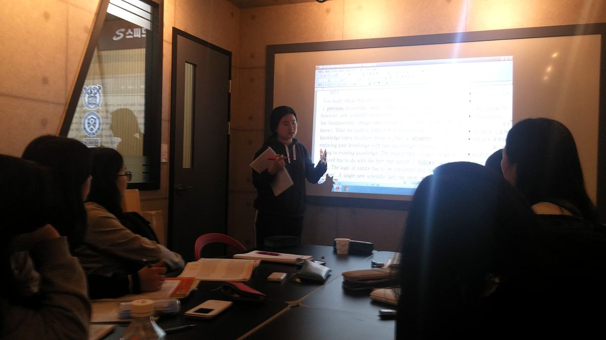
Flipped · 고등부세상에 수많은 직업 중에 교육을 숭고한 작업이라 말하는 것은
아이들의 미래가 우리의 미래이기 때문이다.
매일 아침 가르치는 일, 그 자체만으로도 감사하다. — 스피드TC학원 원장
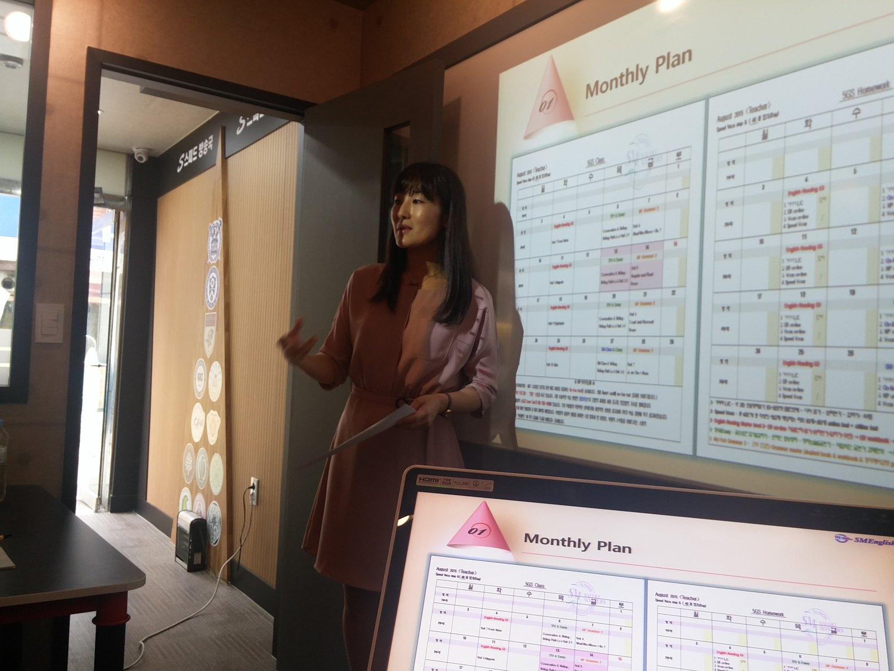
Monthly Plan읽기 → 말하기 → 쓰기. 그리고 거꾸로 교실.
글로벌 인재는 말과 글을 잘하는 사람이며, 이를 위해서는 읽기 → 말하기 → 쓰기의 순서로 능력을 키워야 합니다. 읽기 능력이 가장 기본이며, 이는 풍부한 어휘력과 논리력, 공감과 설득력의 바탕이 됩니다. 독서를 통해 쌓인 배경지식은 이후 논리적 말하기와 글쓰기 훈련으로 연결됩니다. 특히 읽기 능력은 오랜 시간 꾸준히 쌓아야 형성되는 핵심 능력입니다.
플립러닝(Flipped Learning)은 온라인 선행학습 후 오프라인 수업에서 토론과 활동 중심의 수업을 진행하는 역진행 수업 방식입니다. 기존의 '교실에서 학습, 집에서 복습' 방식에서 벗어나, 혼자 먼저 학습하고 교실에서 함께 복습·토론하는 구조로 바뀐 것이 특징입니다. 학생들은 자신이 아는 내용을 말하고 싶어하며, 이런 참여 중심 수업은 학습 효과를 높입니다. 플립러닝은 전 세계적으로 확산 중인 새로운 교육 트렌드입니다.
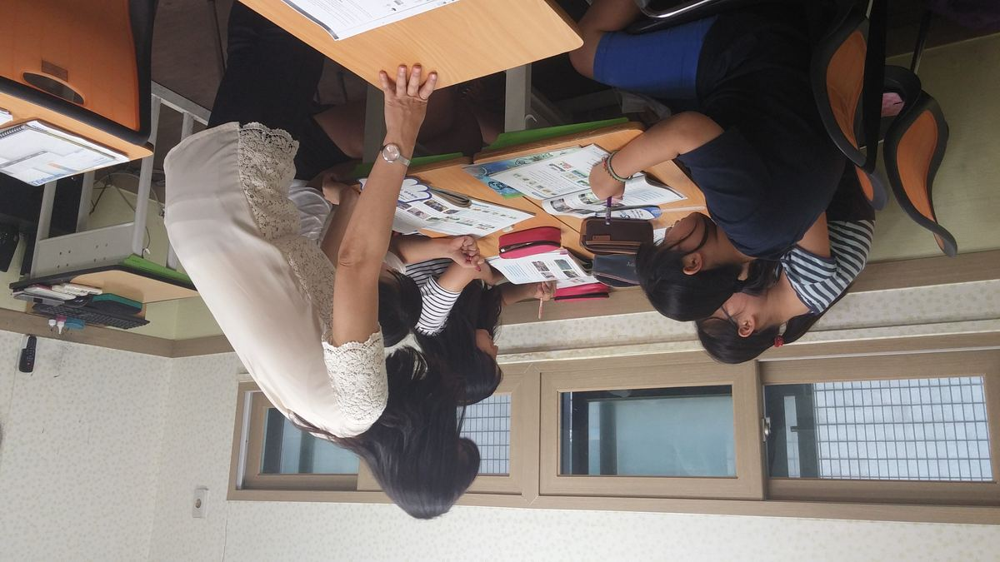
In Class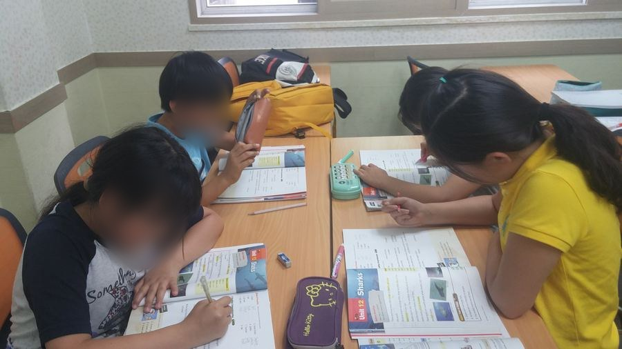
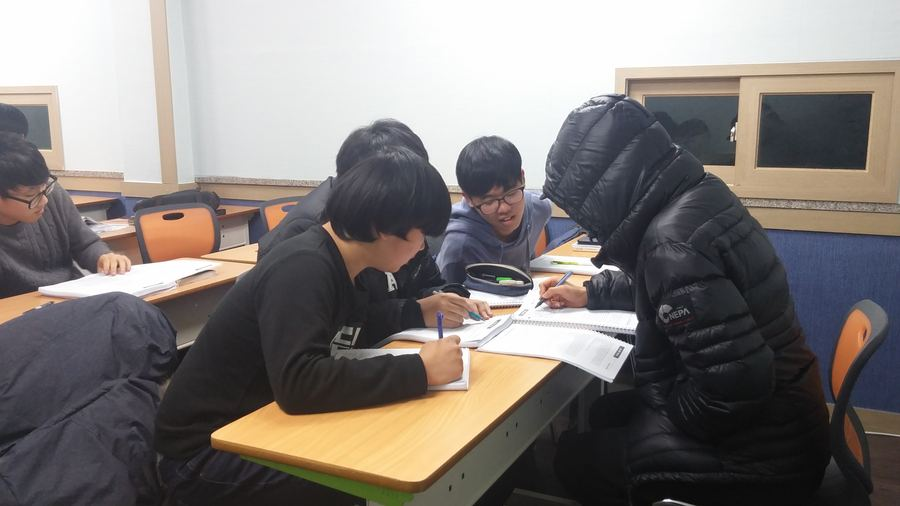
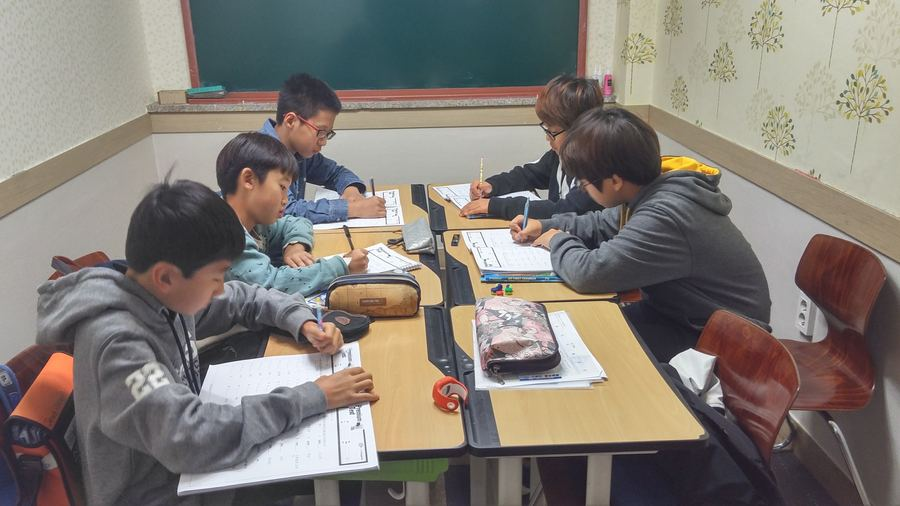
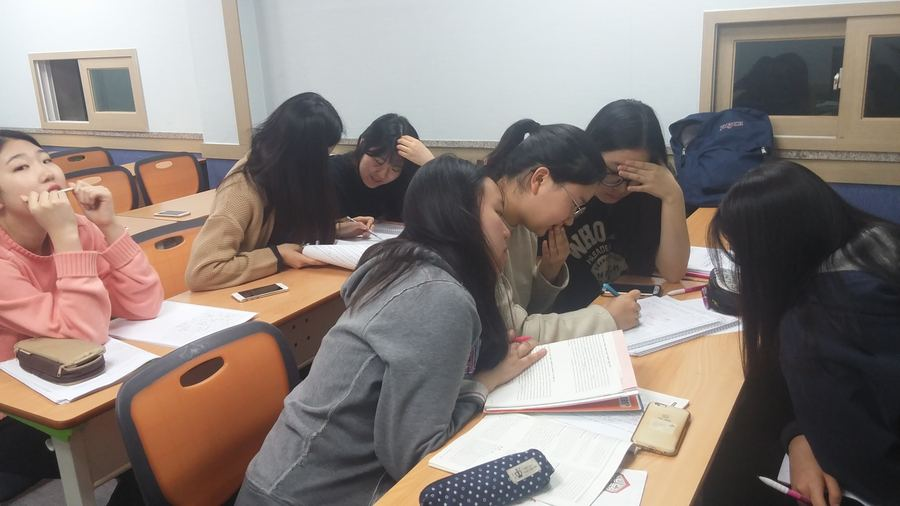
자유학기제를 시행하는 중학교 교실의 모습도 이와 유사합니다. 모둠활동, 팀 프로젝트 학습 등을 통해 발표하고 토론하는 형태의 학습이 진행됩니다. 학생들은 발표, 토론 등을 통해 적극적으로 수업에 참여하며, 다른 학생들의 의견을 공유하여 좀 더 다양한 방법으로 지식을 습득하게 됩니다.
여기에서 중요한 것은 일부 학생이 발표와 토론을 주도하고 나머지는 들러리가 되는 방식의 수업이 되면 안 된다는 것입니다. 이런 수업에 모든 아이들이 적극적으로 동참하게 하려면 초등학생 시절부터 발표, 토론에 적극적으로 참여하는 교육의 형태 변화가 우선되어야 할 것입니다.
교사는 학생들에게 자기주도적으로 지식을 탐구하고 재생산하는 기회를 제공하며, 학생들은 이를 통해 지적 호기심을 해소하고 탐구역량을 기를 수 있습니다. 현실을 무시한 이상적인 교육이라 생각할 수 있겠지만 최근 대학입시에서 괄목할 만한 실적을 내는 학교들은 대부분 이런 수업 방식을 따랐다는 공통점이 있습니다. 대학도 이러한 추세에 맞춰 학생들을 선발하고 있는 것입니다.
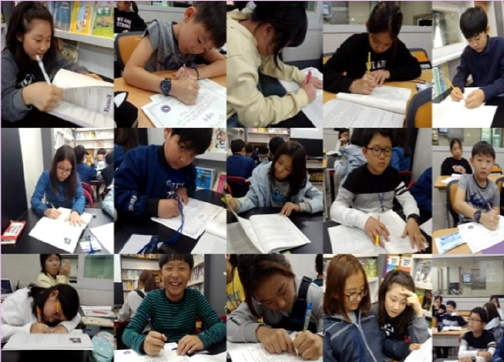
Flipped Learning플립러닝을 적용한 우리 학원의 6가지 다름
학생별로 진도와 상태를 꼼꼼히 관리합니다.
언제든 물어볼 수 있는 교실.
퇴원생이 없는 '패밀리 학원'의 힘입니다.
온라인 예습 후 교실에서 발표·토론으로 완성합니다.
학생들 사이, 선생님과 학생 사이의 관계.
학년이 바뀌어도 끊기지 않는 하나의 흐름.
영어는 읽기에서 무대까지, 수학은 호기심에서 마인드맵까지. 초등부터 고3까지 끊기지 않는 스피드의 교육 설계도.
강의를 듣던 아이들이 무대에 서기까지 — 초등 · 중등 · 고등, 학년이 오를수록 아이가 주인공이 되는 수업
주 3회 수업은 Reading, Grammar와 화상영어 수업을 시수에 반영하여 말하기, 쓰기를 실전 연습시킵니다. 매회 수업에 해당하는 숙제를 통해 Listening을 강화합니다. 모든 초등 수업에 공통적으로 들어가는 부분은 온라인 예습 — 플립러닝의 필수조건인 온라인 예습이 선행되고, 선생님의 주도적 강의가 거의 없다는 것이 주요 특징입니다.
"오히려 강의하는 것보다 더 바삐 이리저리 학생들을 도우러 다닙니다. 아이마다 진도 상황 체크해주고, 질문에 답변해주고, 칭찬과 격려까지 — 바쁘다 바빠!"
학생들을 주인공으로 만들어야 하는 플립러닝의 수업에서는 선생님들의 수업 디자인이 제일 중요하니까요.
"토론과 발표는 초등부와 유사하지만, 틈새를 없애는 전략을 통해 실질적인 시험 준비를 강화합니다."
이 수업은 어휘·과제 검사로 시작합니다. 중등부는 시험 대비에 초점을 두고 있으며, 특히 어휘를 기본으로, 강의와 온라인 학습을 통해 문제풀이 시간 안배, 변형·기출 문제의 정확한 이해, 그리고 개인차를 존중한 협업 학습 방식으로 공감과 효과를 동시에 추구하고 있습니다.
고등부 학생들에게 플립러닝을 적용해보면 스스로 공부하는 자세가 되어 있고, 자신에 대한 관리가 가능하다는 점에서 아주 좋은 결과가 나옵니다. 하루 4교시 수업을 하면서 1교시/3교시는 학생들 스스로 학습하고, 2교시/4교시는 선생님이 직접 코칭 프로그램을 운영합니다.
스피드TC학원은 학년별, 학생별 1:1 교육으로 초등부에서 고등부 입시까지 단계적이고 체계적인 교육으로 끝까지 책임집니다.
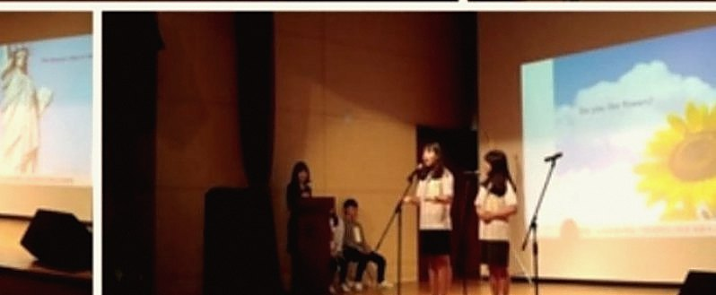
On Stage온라인으로 먼저 배우고, 교실에서 토론하고, 마지막엔 사람들 앞에 서서 말합니다. 초등부의 화상영어에서 시작된 말하기가 중등부의 그룹 발표를 지나 고등부의 메타인지 발표로, 그리고 320명이 모인 영어 말하기 대회의 무대로 이어집니다.
플립러닝으로 영재를 만드는 곳 — 스피드TC학원 영어 교수법의 목표는 시험 점수 너머, 자기 생각을 자기 말로 하는 아이입니다.
가장 좋은 교재는 '교과서'입니다 — 북미 교과서 700여 종의 스토리북
가장 좋은 교재는 '교과서'입니다. 스피드영수학원의 영어도서관은 북미(미국, 캐나다) 현지 학교에서 사용하는 교과과정 700여 종류의 검증된 스토리북을 사용합니다. 미국 교사들이 뽑은 "Teacher's Choice Award" 수상 콘텐츠로, 레벨에 따라 체계적인 주제로 구성되어 있으며, 각 권마다 독후 온라인 학습과 간결한 교사용 체크시스템으로 원생을 관리합니다.
재미있게 배우는 종합 학습 시스템입니다. 스피드영수학원 영어도서관은 언어의 4가지 영역, Listening, Speaking, Reading, Writing의 유기적인 학습 연계로 영역별 실력 향상은 물론 영어적 사고력까지 키워줍니다.
레벨별 성적관리 및 과학적인 학습 목표를 제시합니다. 홈페이지에서 본인의 학습결과를 확인할 수 있습니다. 학생들의 개인별 성적 관리를 통해 장기적인 학습 목표를 제시해주고 체계적으로 목표에 도달할 수 있도록 도와줍니다.
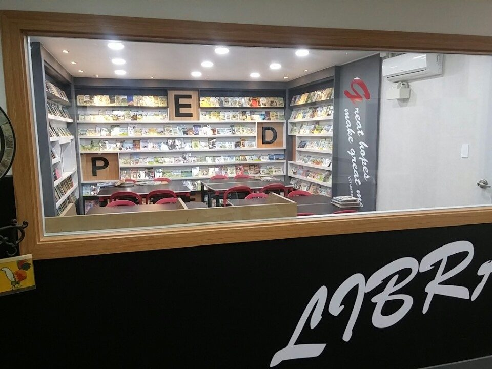
Library · 700+ Books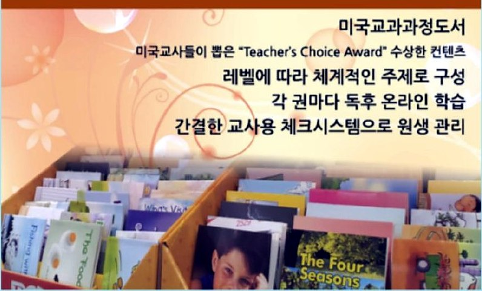
US Curriculum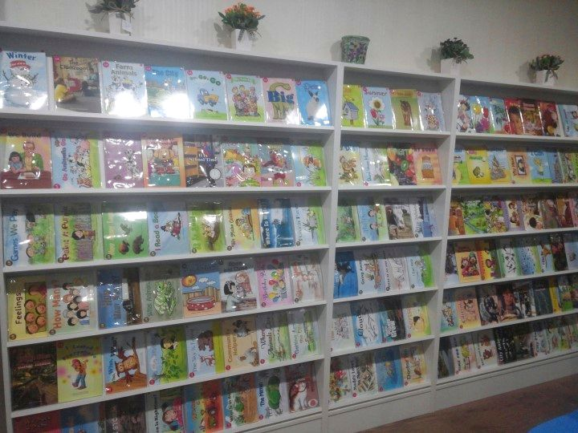
North American Curriculum독창적인 교육기법 — 문제를 푸는 수학에서, 개념을 스스로 그리는 수학으로
2003년 미국 매사추세츠 대학의 인지심리 연구소 '존 허블톤' 교수가 이끄는 연구팀이 '호기심에 의한 정보습득과 기억화 정도'에 대한 실험결과를 발표하였다. 호기심과 궁금증이 극대화되어 있는 상태에서 어떤 정보를 인지하게 되었을 때, 평상시보다 훨씬 습득 정도가 높고 기억이 오래가는 것으로 알려졌다. 뇌파가 다른 방식으로 작동한다는 것이다.
스피드TC학원이 수학 교육에도 플립러닝을 적용하여 학생들의 호기심과 궁금증을 유발하는 결과를 믿고 있는 것은 세계적인 연구결과에 따른 것입니다.
스피드TC학원의 가장 중요한 숙제 — 배운 개념에 대한 마인드맵 그리기! 선생님과 개념정리 한 번 그리고 자기주도학습 시간에 개념 마인드맵을 통해 완벽하게 개념을 마스터합니다. 학원생이 자신의 배운 내용을 스스로 정리해 개념을 이해한다는 것이 저희 스피드영수학원 수업의 장점이라 할 수 있습니다.
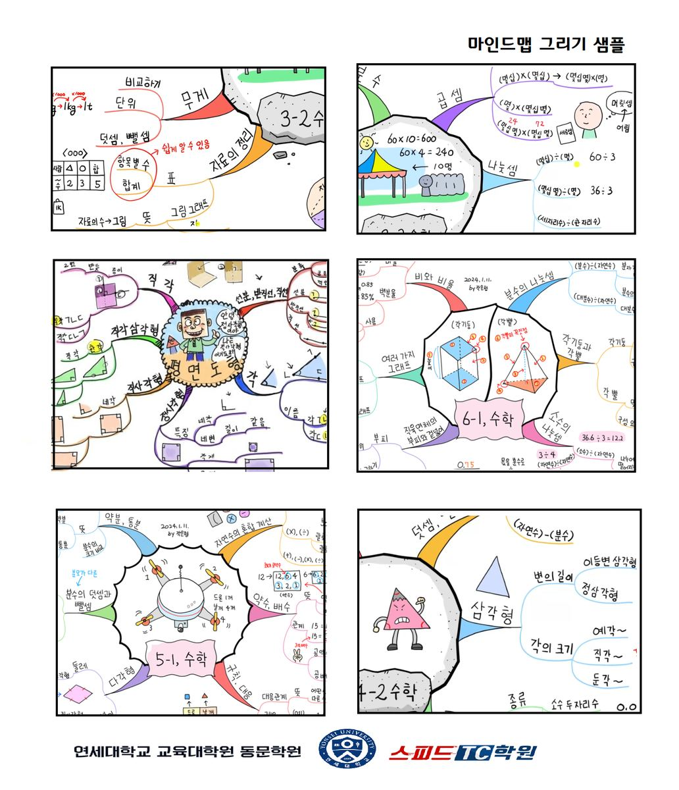
Mind Map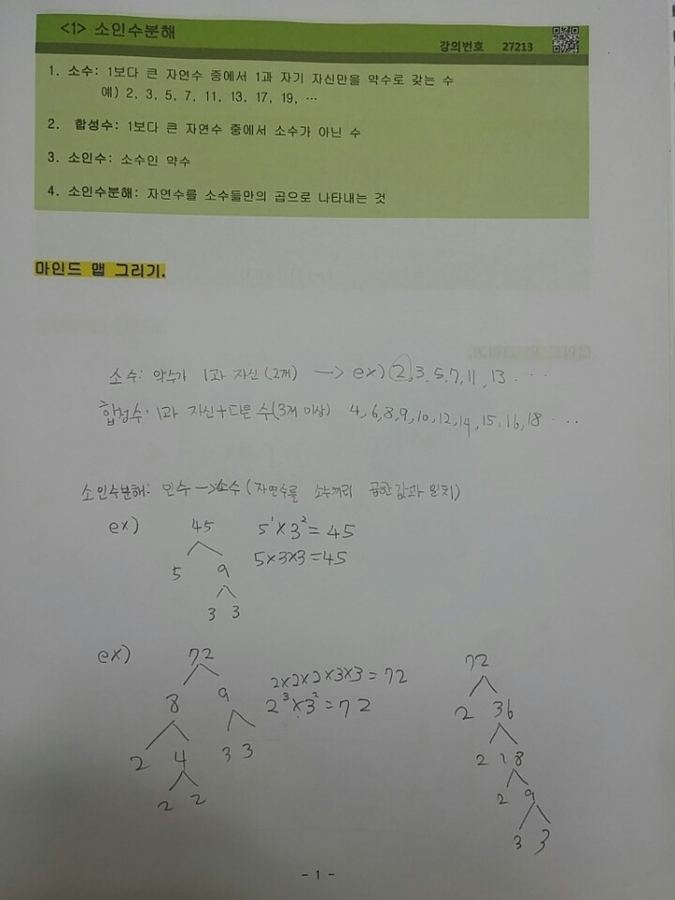
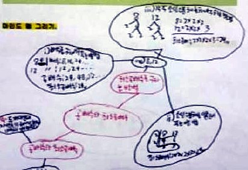
스피드TC학원에서는 문제집을 풀 때 그냥 풀지 않습니다. 문제집과 연계한 초시계 체크를 통해 학교시험과 동일한 상태에서 문제풀이를 진행합니다. 이런 초시계 훈련은 학교 시험에 대한 긴장감을 해소시켜 줍니다. 각종 평가에서도 시간 내 문제 풀이에 대한 적응력을 길러 시간이 부족해서 다 못 푸는 상황은 없애는 효과도 있습니다.
초시계 훈련에서 통과하지 못한 문제를 직접 설명하면서 풀어보는 모습을 찍어봤는데요, 자신이 틀렸거나 어려워했던 부분을 설명함으로써, 문제에서 이해하지 못했던 부분을 이해하고 풀어 낼 수 있는 모습이 보입니다.
이렇듯, 초시계 훈련법은 처음에는 낯설고 어려울 수 있지만, 반복하여 훈련하다 보면 자신이 이해하지 못한 부분을 보완하고 풀이시간을 줄여 나감으로써 실제 시험에서 시간싸움에서 유리한 위치를 가질 수 있습니다.
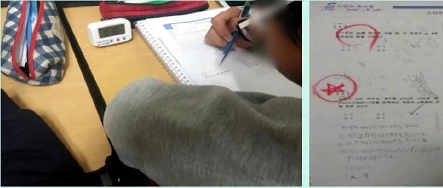
Stopwatch Training"독해력 없이 공부가 가능하다고 생각하십니까?" — 음독을 없애고 의미단위 읽기로, 분당 1,000자
독서력과 독해력은 전혀 다릅니다. 독해력은 비문학 문장을 읽는 능력 — 동화·위인전처럼 아는 것을 읽는 '기지 읽기'가 아니라, 추론과 맥락 파악이 필요한 글을 읽는 '미지 읽기'입니다. 중·고등 공부용 글은 거의 모두 비문학이고, 수능은 분당 1,000자 이상 읽어야 지문을 제대로 읽고 답할 수 있는 시험입니다.
그런데 거의 모든 아이가 한 단어씩 소리 내어 읽는 음독을 하고 있습니다. 최상위권 아이들은 다릅니다 — 소리 내지 않고 의미단위로 두뇌로 읽습니다. 스피드TC학원은 2015년 스터디포스 독해력 교정훈련(언어포스)을 도입해, 영어·수학에 앞서 '글 읽는 방법' 자체를 바꾸는 훈련을 시작했습니다.
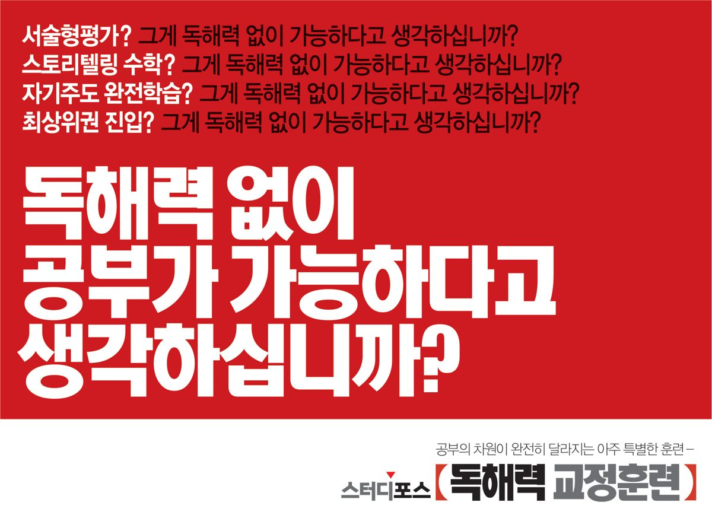
StudyForce · 2015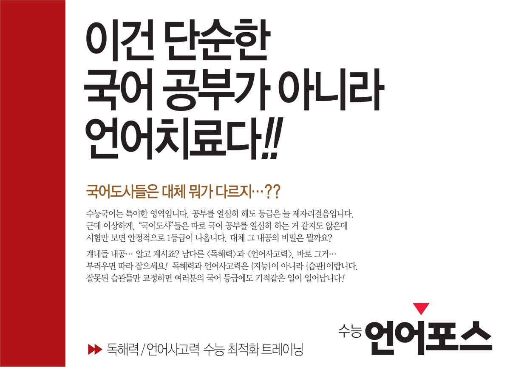
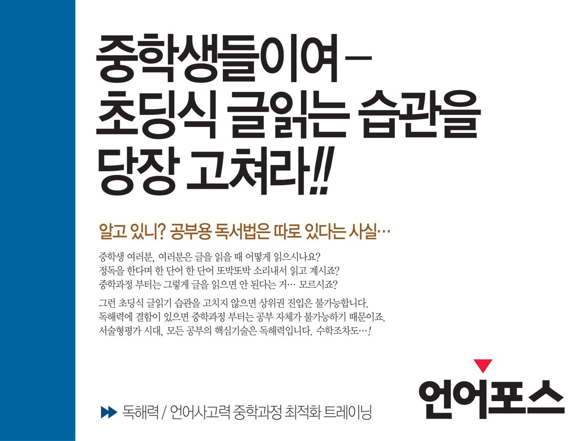
독해력 진단 테스트 — 지문 2개·질문 10개로 독해 정확도와 속도를 재고, 어휘력·워킹메모리·추론능력·독해습관 자가진단까지 '독해유창성 요인'을 분석합니다. 결과는 4가지 유형으로 나옵니다: ① 최상위 수준(정확도 90%↑, 900~1,000자/분) ② 성실한 음독습관자(정확도 높지만 400자/분) ③ 음독으로 독해 지장(정확도 40~50%) ④ 지문은 대충 읽고 답만 맞추는 유형.
교정 훈련 — 예비(문자인지·이해력) → 기본(기초 독해력 개선) → 심화(언어사고력 정교화), 초·중·고 각 3단계 총 180회. 하루 30~40분 온라인 훈련 + 워크북, 주 5회 권장, 학원에서 선생님 입회하에 진행하고 훈련 계획서·서약서·교정일지로 관리합니다.
180회를 성실히 이수하면 독해속도가 3배 이상 빨라지고, 수능 국어뿐 아니라 서술형 내신·대입 논술·수시 비교과까지 — "성적 유지가 아닌 권역 상승"이 일어납니다. 훈련 사례: 고1 67점 5등급 → 93점 2등급(12회차), 고2 65점 5등급 → 90점 2등급(40회차), 고3 3월 50점대 → 7월 80점대.
다르게 키우고 싶다면 다르게 가르쳐라! — 학년별 운영 구조와 두 원장
월~금 1:10~2:00 / 2:10~3:00 · 초등 1~2학년
월·수·금 / 화·목·금 3:00~5:00 · 초등 3~6학년
영어: 디즈니 뮤지컬 수업, 스토리 브리핑, 영어 도서관(파닉스·리딩 특화), I-Pattern 말하기, The Grammar Class · 매주 금요일
수학: 체험수학(게임+체험+이론+의사소통), 완전학습(교과진도), 선행학습(중등진도), 심화학습(교과+중등)
토 10:00~12:00 원장 직강, 결석 보충, 개인별 수업 보강
담임과 부담임, 원장선생님 3명의 관리 · 1달 1회 동기부여 프로그램
월·수 / 화·목 5:00~7:30 · 중등 1~2학년
7:30~10:00 · 중등 2~3학년 (교과 내신/심화/고등 선행, 일반·심화·최상위)
주말반 10:00~6:00 · 원장 직강, 결석 보충, 개인별 수업 보강 · 주간 test, 과제 check 후 개별 밀착 보충
영역별 전문 선생님의 수업과 원장선생님의 상담 및 관리 · 1달 1회 진로·진학 전문 컨설팅
화·목 / 수·금 / 월·수·금 / 화·목·토 7:30~10:00 · 고등 1~3학년 (내신대비/심화/선행, 최상위 1등급)
주말반 10:00~6:00 · 주말 모의고사반, 주말 내신대비반
월 4·8·12회 국어 독해력(스터디 포스) 관리
담임과 부담임의 영역별 수업, 원장선생님의 비교과 관리 · 1달 1회 비교과 포트폴리오 관리
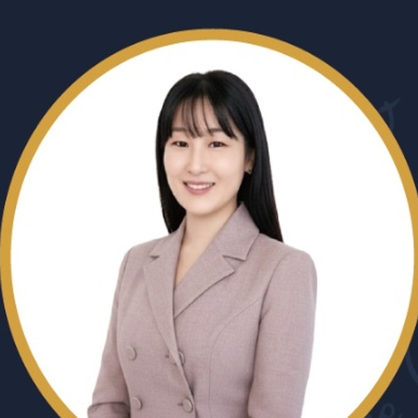
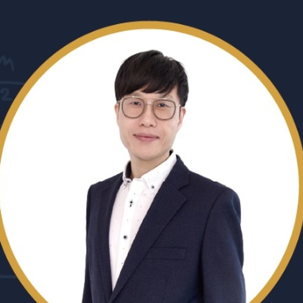
동기부여 수업, 대학 탐방, 말하기 대회, 북미 캠프, 봉사활동, 파티와 요리까지. 배움의 스펙트럼을 넓히는 시간들.
아이들 성장의 필수 영양소 — 초3부터 주 1회, 생각을 키우고 습관을 바꾸고 진로까지 이끄는 청소년 성공 견인 프로그램
퍼플카우 미래동기부여 프로그램은 퍼플카우미래동기부여연구소가 개발한 청소년 성공 견인 프로그램으로, 스피드TC학원은 2017년 영어과 안성은 원장이 동기부여 1급 자격을 취득한 뒤 정규 과정으로 도입했습니다. 세스 고딘의 '보랏빛 소(Purple Cow)'처럼 — 남과 구별되는, 유일한 아이로 키우자는 뜻입니다.
초등 3학년부터 주 1회, 66코칭 플래너와 미래교과·비교과노트(미래노트세트)로 비전 설정 → 중심가치 찾기 → 직과 업 → 미래 이력서 → 사명서까지 이어집니다. 초등 때부터 이 수업을 들은 아이가 꾸준함과 성실함으로 2024년 서울대 경제학부에 합격했습니다 (17장).
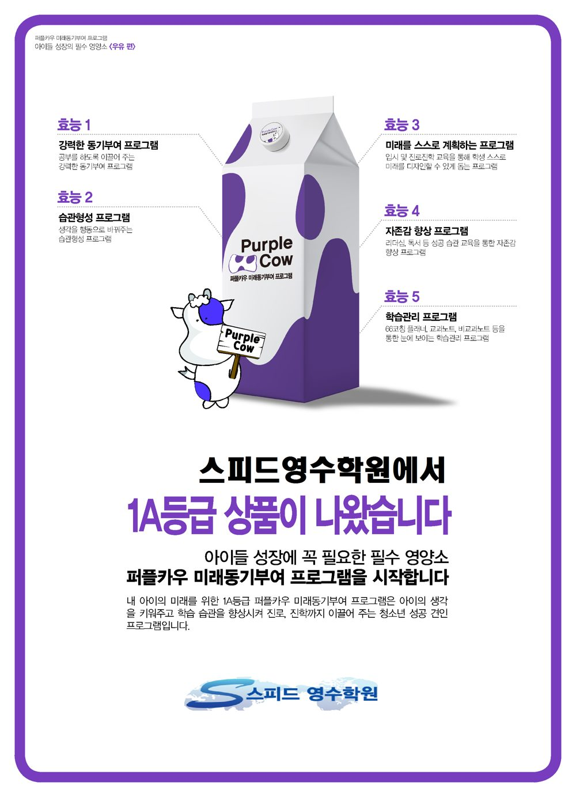
Purple Cow · 2017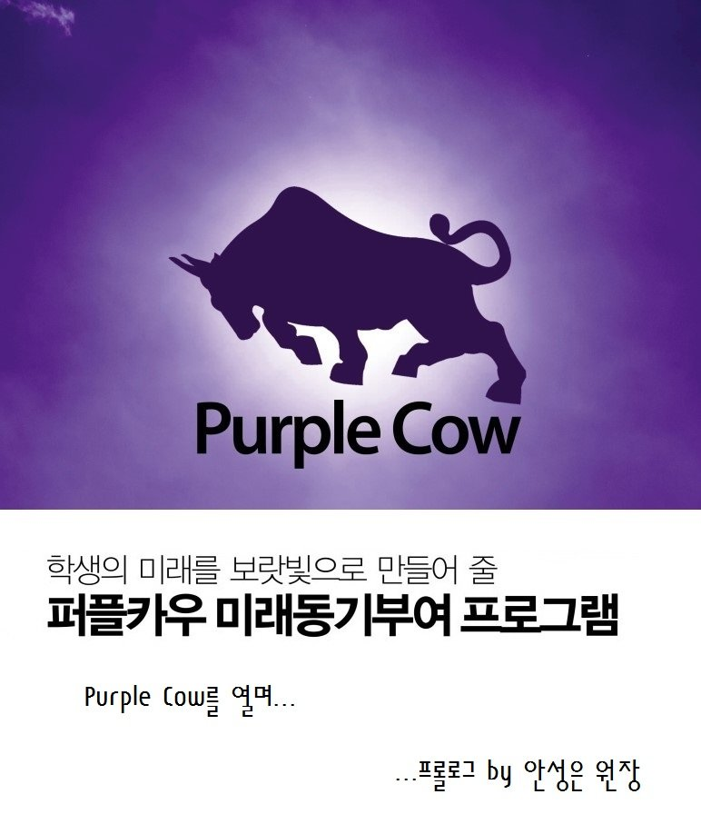
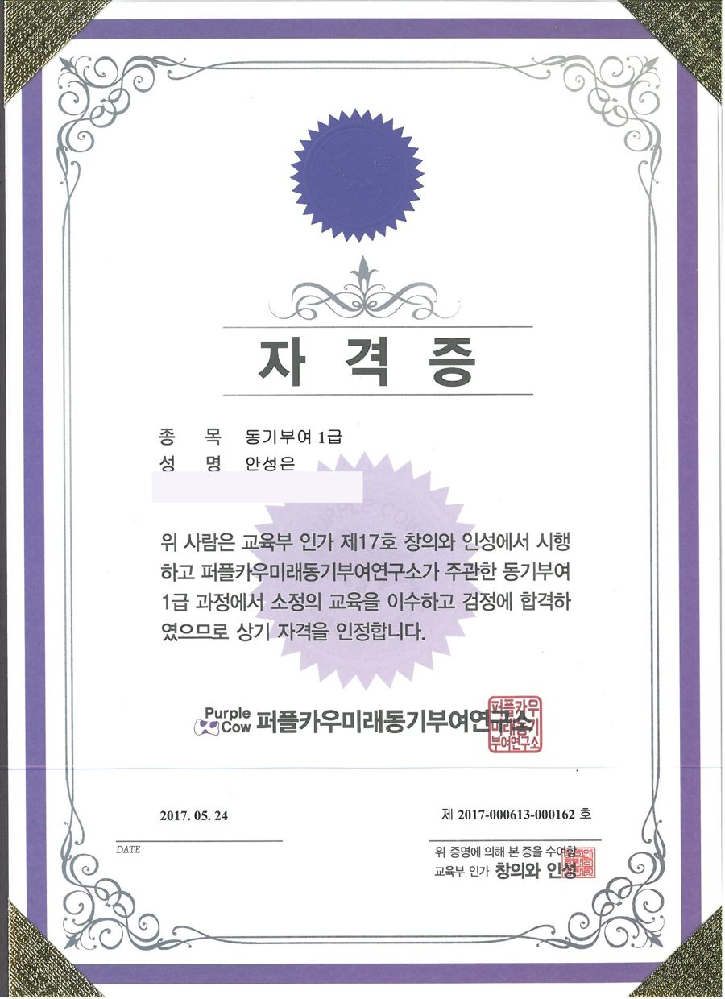
아이들의 꿈과 진로를 스스로 발견할 수 있도록 해줍니다. 공부는 왜 해야 하는지 학생 스스로 이유와 동기를 깨닫게 합니다.
계획보다 실행에 중점을 둔 실천형 습관 형성 프로그램. 지속적인 관리와 평가를 통한 근본적인 행동변화를 일으킵니다.
목적에 맞게 세분화된 동기부여를 통한 맞춤형 프로그램. 남과 다른 나만의 고유한 목표를 설정하게 합니다.
매월 초 맞이하게 될 미래동기부여 프로그램 Purple Cow. 자! 우리 퍼플카우들의 모습을 보여드릴까요? 개인사명서를 가지고 있는 예일대 학생의 스토리를 보고, 우리 '퍼플카우'들은 눈빛을 빛내며 생각합니다. 나의 이름은 어떤 뜻이지? 내가 잘하는 것은 무엇일까? 내가 좋아하는 것은 무엇일까? '현재의 나'를 알아가는 담백한 시간을 마무리하며 Think different! 아이들에게 귀감이 될 만한 스티븐 잡스의 광고를 첨부합니다.
"틀에 박힌 관념에 사로잡히지 않고 남들과 다르게 생각하고 행동하는 것 — 그것이 혁신의 시작, 아닐까요?"
지난 퍼플카우 동기부여 수업 이후 언제 또 하냐며 조르고 기다려준 초등부 학생들~ 미래의 나에 대해 생각해 보는 시간, 고개도 갸우뚱, 손 번쩍 들고 이야기하는 친구까지! 영상을 보던 친구들이 누가 먼저랄 것도 없이 갑자기 노래를 부르기 시작합니다. 한 곡이 끝날 때까지 합창에 되려 뭉클해집니다. 우리 학생들의 성장을 목표로 하는 시간이지만, 학생들의 이런 모습이 정말 감사한 선물입니다. 자 그럼 바른 생각을 세워나가는 우리 학생들의 모습에 격려와 응원을 보내요.
— written by 안성은 원장
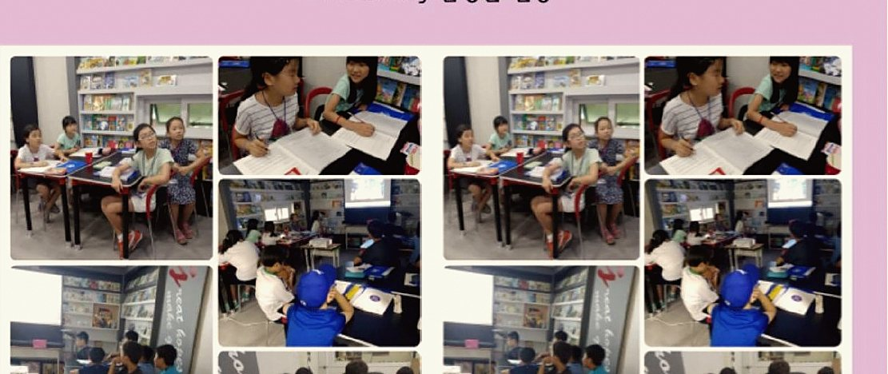
Purple Cow · Class지난 시간 멘토영상을 보고 노래를 따라 부르기까지 했던 막내 초등학생들이~ '나도 누군가의 멘토로 성장'할 거라는 선생님의 첫 시작으로 갑자기 숙연해집니다~ 토끼를 발견하고 끝까지 쫓아간 사냥개와 옆에서 뛰다가 중도 포기하고 토끼가 어디 있냐며 핀잔을 늘어놓는 사냥개들의 이야기를 읽으며… 가슴 가득 비전을, 희망을, 꿈을 품어라.
가정에는 가훈이, 학교에는 교훈이 있듯이 여러분이 추구하는 삶에도 가치가 있습니다. 이 중심 가치는 인생을 살아가며 선택의 기로에 섰을 때 판단의 기준이 되는 이정표 역할을 해줍니다. 내가 살아가면서 꼭 필요한 것들은 무엇이라고 생각하나요?
초등학생에게 물었습니다. 여러분은 의사도, 스튜어디스도, 경찰관도, 아이돌가수도 될 수 있습니다. 단, 여러분이 지금부터 재능을 발견하고 준비하고 노력한다면 말이죠.
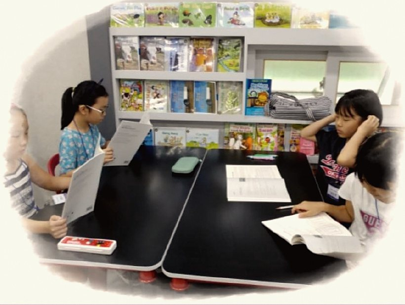
Vision직업은 '직'과 '업' 두 글자로 결합되어 있습니다. 직은 영어로 OCCUPATION으로 내가 다니고 있는 직장 내에서의 담당 업무를 뜻하며 '직'은 내가 아닌 다른 사람으로도 쉽게 대체가 가능합니다. 반면에 '업'은 VOCATION으로 평생을 두고 내가 매진하는 주제, 즉 천직이나 사명을 뜻합니다. 그러므로 직업이란 자신의 업을 이루기 위해 자신의 재능에 맞는 직으로 행복을 추구하는 행위라고 할 수 있습니다.
여러분이 미래에 대한 분명한 비전이 있고, 완벽한 미래에 대해 확실하게 그리고 있다 하더라도 여러분 삶의 99%는 궤도에서 벗어나 있을 겁니다. 다양한 시도를 하면서 실수도 하고 일시적인 장애물도 만나지만 그 과정 속에서 여러 교훈을 얻고 궤도 안과 밖을 왔다 갔다 할 테지만, 딱 적당한 시기가 되면 목표점에 도달할 수 있을 것입니다. 단, 여러분이 가야 할 방향만 알고 있다면 말입니다.
'기록의 중요성'에 대해 서로 이야기해보고 한남대학교 총장을 지내신 이원설 박사님의 '미래이력서' 동영상을 함께 시청해봅니다. 유학생활을 하던 젊은 이원설 박사님은 미래이력서를 써내려갑니다. 50년 뒤 실제 이력서와 비교를 해보니 많은 차이가 있지 않았답니다. 당신은 어떤 모습으로 살아갈까요?
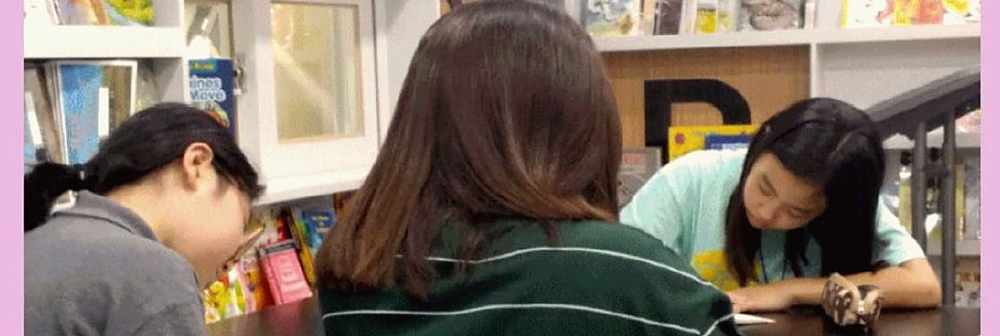
Occupation · Vocation미래 이력서에 세운 비전은 꼭 목표한 해에 반드시 실현되지 않을 수도 있습니다. 조금 빨리 혹은 조금 늦게 실현되기도 합니다. 중요한 것은 우리가 열망하는 인생의 여정을 미리 계획하고 그것을 작성해서 매일 들여다보면 반드시 이루어진다는 것입니다. 또 그것을 수정 및 보완해 가면서 성취 의지를 다질 수 있습니다. 우리 스피드 영수학원 친구들의 오늘의 이 시간이 여러분 인생에 긍정적인 영향을 가질 거라 확신하는 선생님은 오늘도 화이팅을 보냅니다~!
스피드영수학원의 인기 Class — 미래동기부여 5차시가 있었답니다. 이번에는 미래가 바뀌는 사명서 쓰기! 사명서란 우리 삶이 어떤 것인지 말해주는 개인적 신조 또는 삶의 설계도라고 할 수 있습니다. 사명서는 조화롭고 균형 잡힌 삶의 기반이 될 것이며 삶의 올바른 방향을 제시해줍니다. 또한 자기 암시의 효과를 주며 새롭게 변화하기 위한 첫걸음이 됩니다. 격언 또는 명언 모아 사명서 쓰기 도전~ 자기 중심가치를 이용하여 사명서 쓰기 도전~
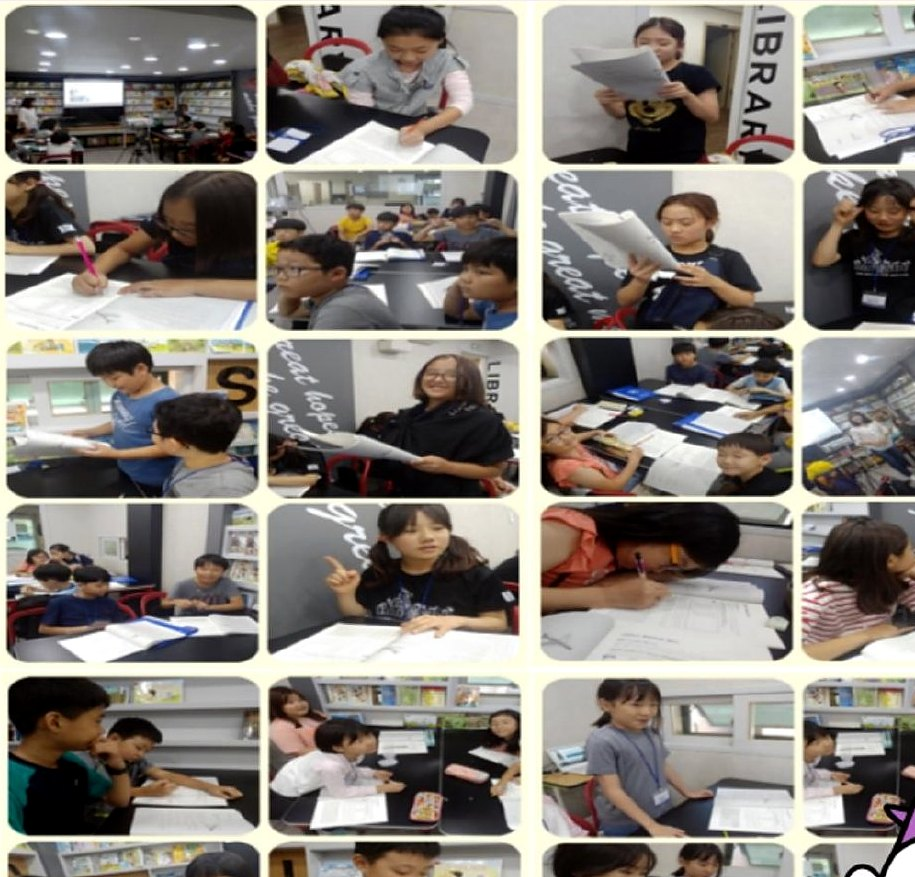
Future Resume이 지역 내에서 혁신학교로서 자유학기제 훨씬 그 이전부터 학생들의 꿈과 끼를 찾는 다양한 진로교육을 펼치는 교문중학교의 '학부모 진로특강 교육기부' 활동에 참여하게 되었답니다. 영어학습법, 진로탐색, 학습코칭, 교과 비교과지도 등 다양한 커리큘럼 중에서 어떤 부분을 풀어줘야 그 짧은 시간 동안 진로 및 직업체험의 장을 넓혀줄 수 있을지 잠시 고민의 시간을 가졌습니다. '미래동기부여' 수업이 도움이 되었길 바라면서요…
그리고 집으로 돌아온 저에게 생각지도 않은 선물이 찾아왔습니다. 수업을 들은 30명 친구들의 감사편지를 받게 되었습니다. 음.. 항상 생각하고 느끼는 바… 제가 베푼 것보다 더 많은 것을 받고 느끼며 살게 되는 것 같습니다. 마무리 시간에는 좋아하는 일을 찾기 위한 멘토의 가치를 알려주고, 그리고 여러분들도 역시 누군가의 멘토가 되어 줄 수 있음을 전달해보았습니다. 언제나 우리의 학생들을 응원하며 교육 기회를 주신 교문중학교에도 감사드립니다.
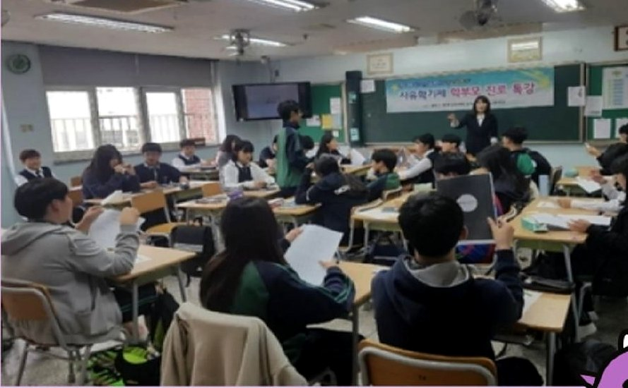
Gyomun Middle School선배 멘토에게 듣는 조언, 학습 동기와 진로의 첫걸음 — 연세대학교 견학
3월~ 개학의 설레임과 봄의 기운이 느껴지는 달입니다. 이번 동기부여 프로그램은 스피드영수학원 학생들과 함께 교육대학원 협력기관인 연세대학교에 방문하려고 합니다. 미국 IVY리그 대학탐방과 문화체험에 이어, 이번에는 스피드의 모교인 연대를 방문하여, 선배 멘토들로부터 여러 조언과 정보들을 듣고, 학습동기 및 진로에 조금이나마 도움이 되길 기대합니다.
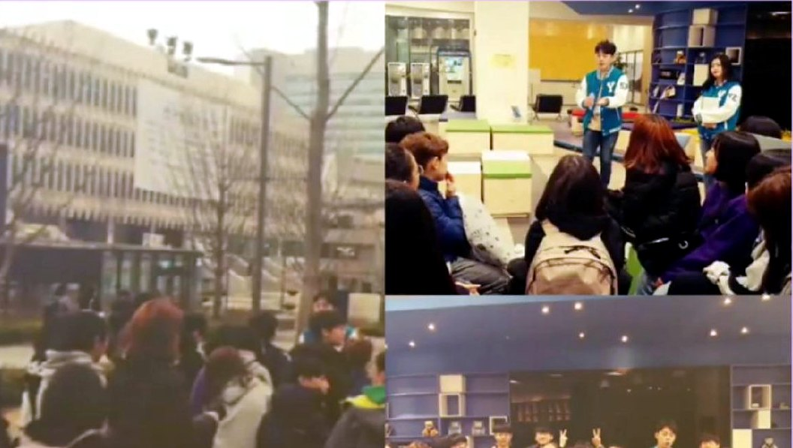
Yonsei · 2019.03.233월 23일 토요일에는 견학 신청한 25명의 친구들과 함께 연세대학교에 다녀왔습니다~ <초중고 연계학원>으로서 초등 친구들이 고등학생이 되어 대학진학을 하는 시간과 현장을 함께 하다 보니 점점 욕심 나는 것들이 많아지고 있어요!
1885년 창학 이래 근대 교육의 장을 연 연세대학교는 국제 최고의 사학이자 세계적인 명문대학교입니다. 미래 사회에 적합한 전공 지식을 이해하고 여러분의 재능과 창의적 사고를 발휘할 수 있는 교류의 장으로 우리 친구들에게 좋은 느낌과 도전의 자극이 되었기를 바래요~
연세대학교 동문이 운영하는 학원으로서 우리 스피드 친구들에게 새로운 장을 하나 더 보여준 것 외에도 견학이 주는 또 하나의 의미는… 서로 나누고 공존할 수 있는 능력은 미래 사회에서 실천하는 리더를 키워낼 수 있는 최고의 배움이라고 생각해요. 항상 학원에서의 생활, 학습 그리고 행사에서 Friendship과 배려를 놓치지 않는 이유이기도 합니다. 오늘 학원 밖의 나들이에서도 즐겁게 웃고 참여하고 질서를 지켜준 스피드영수학원 여러분~ 여러분의 '열심과 우정'이 영원하기를 바랍니다~ 사랑합니다^^
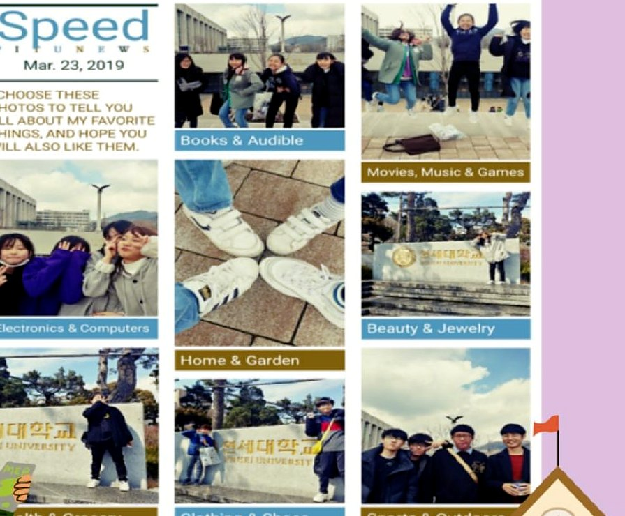
Speed · Mar 23, 20195월 21일 강남 인재 영어 말하기 대회 — 320여 명의 학생들이 모인 무대
① 준비과정 — 희망 학생들이 직접 주제를 고르고 원고를 썼습니다. 책을 읽으며, TV를 보며, 부모님·친구들과 이야기하며 생각했던 것을 자기 말로 풀어내는 연습. 아침부터 학생들이 호흡을 맞춰 보고, 선생님들도 함께 도와주고, 본 대회 대기 중에도 계속 맞춰보며 연습했습니다.
② 대회 당일 · 심사위원 — 2017년 5월 21일, 제1회 코리아 인재 영어 말하기 대회에 320여 명의 학생이 모였습니다. 강남문화예술협동조합 주관, 국제문화인재개발협회 주최, (사)대한윤봉길의사기념사업회·한국스카우트 서울남부연맹·(사)여성경영인총연합회·건국대학교 후원. 원어민 심사위원단이 심사하고, 협회 이사인 영어과 안성은 원장이 사회를 맡아 대회를 열었습니다.
③ 캐나다 정부 MOU · 북미 캠프 — 국제문화인재개발협회는 캐나다 정부(교육기관)와 MOU를 맺어, 대회 수상 학생들에게 미국 IVY리그 대학탐방과 캐나다 문화체험 캠프를 지원했습니다. 참가자 전원 수상이라는 결과로 스피드 학생들은 이듬해 1월, 13일간의 북미 캠프를 떠났습니다. 우리 학생들이 이번 대회를 통해 소중한 경험과 용기를 얻었을 거라 확신합니다!
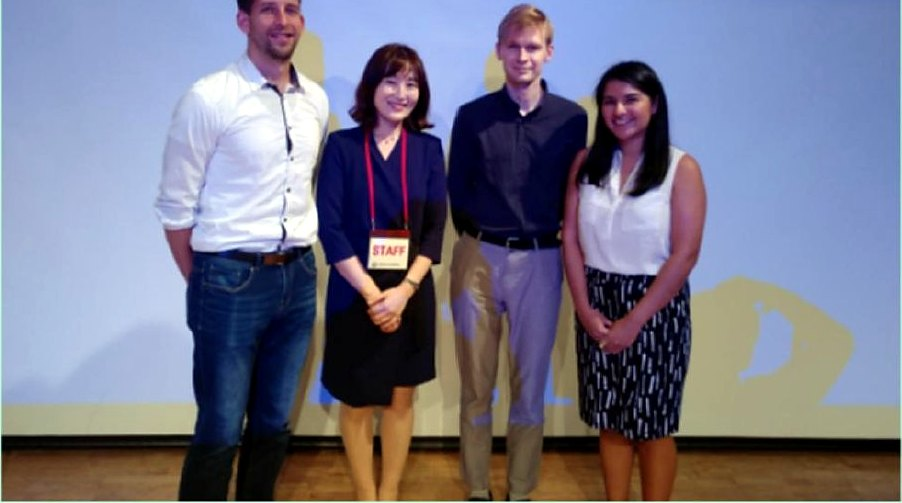
Judges · 2017.05.21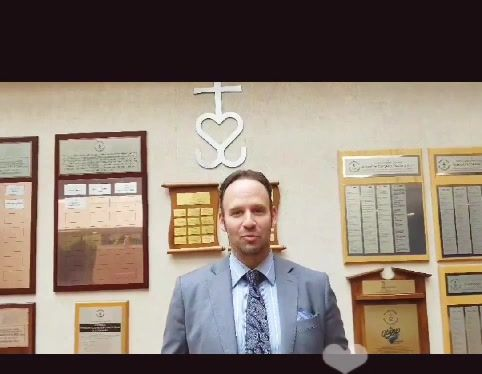
MOU · Canada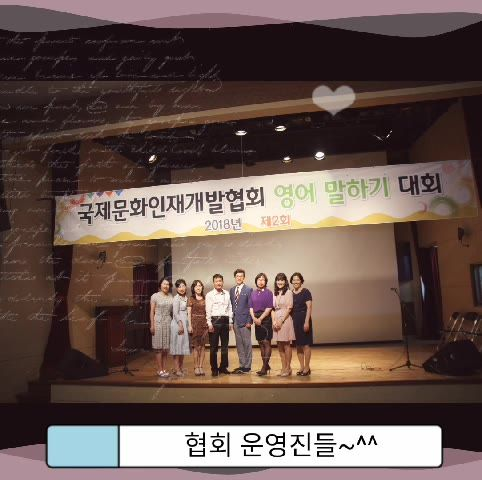
협회 운영진등수가 없는 대회입니다. 코리아 인재 발굴 영어 말하기 대회는 영어실력을 겨루는 대회가 아닌 서로의 주제를 들어보고 경험을 교류해 보는 대회로 경쟁보단 서로에 대한 이해와 본인 발표를 하며 얻는 자신감을 중심으로 진행하였습니다.
또한 어려운 주제가 아닌 본인의 경험을 토대로 발표준비를 하였습니다. 본인이 책을 읽으면서, TV를 보면서, 부모님과 이야기 하면서, 친구들과 이야기 하면서 생각했던 것들을 자유롭게 발표하게 한 점이 특징입니다.
코리아 인재 발굴 영어말하기 대회는 지식함양에 도움을 주며, 세계화의 중심에서 영어로 자유로운 의사소통이 가능할 수 있도록 도와줍니다. 또한, Reading/Writing 방식의 사고방식을 탈피하여 외국인과의 영어회화 실력 향상에 도움을 줄 수 있으며, 준비된 대본을 읽는 것이 아니라, 청중들에게 자신이 준비한 이야기를 준비함으로서 발표력과 표현력, 암기력에도 도움을 줄 수 있습니다.
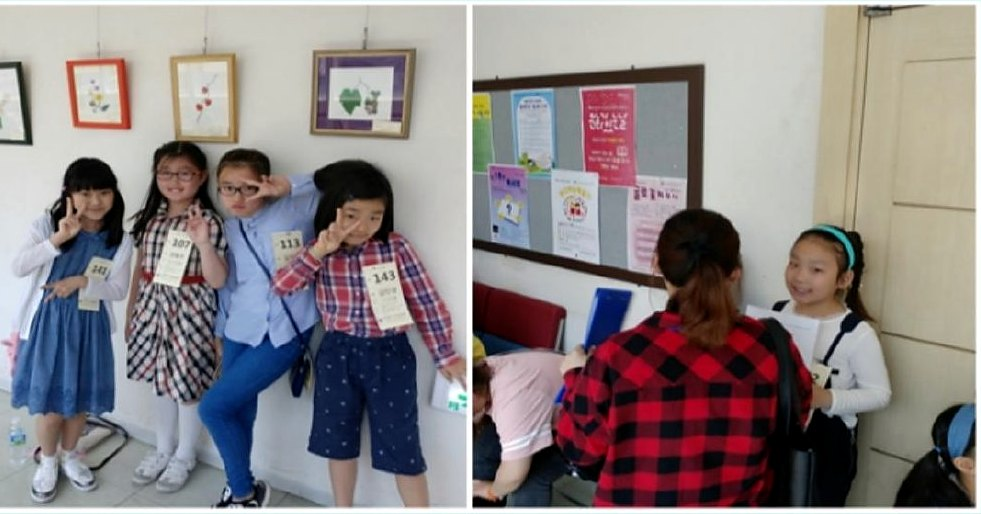
Rehearsal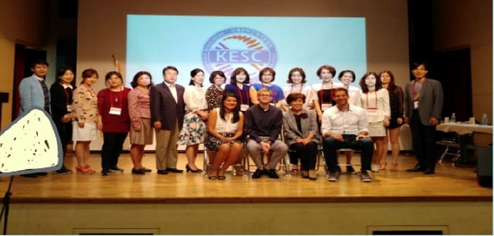
Organizers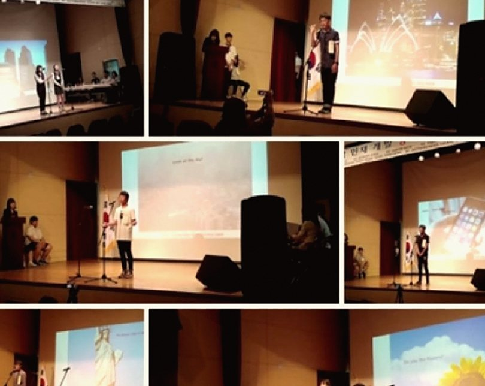
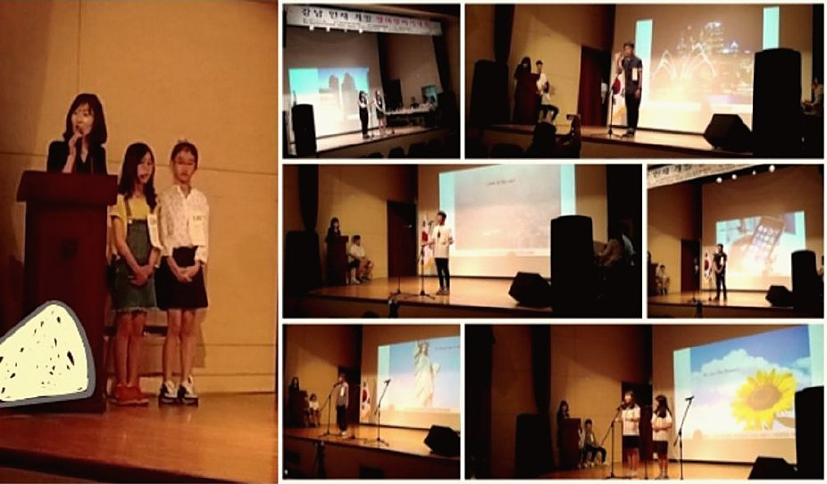
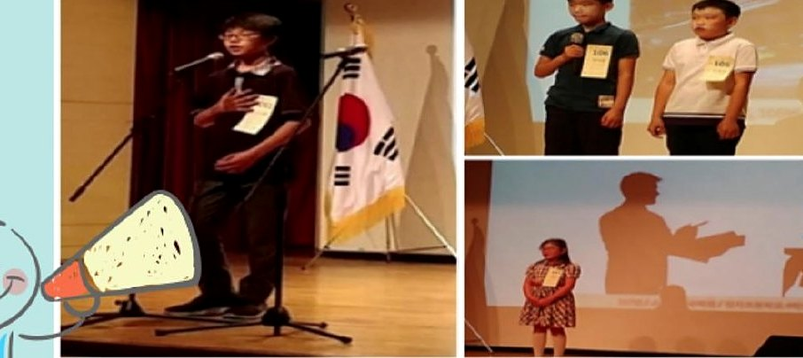
Stage희망학생들이 직접 준비하여 참가한 강남영어말하기 대회 — 참가자 전원 수상, 그리고 북미로
희망학생들이 직접 준비하여, 참가한 강남영어말하기 대회! 세계의 리더로 거듭나기 위해 대회에 참가한 친구들… 강남영어말하기대회에서 참가자 전원이 수상을 하였습니다. 축하합니다~! 수상자는 국제문화인재개발협회의 지원을 받아 미국 IVY 대학탐방과 북미 문화 체험을 다녀오게 되었습니다.
스카우트 대상부터 협회장 장려상까지, 백문초·교문중·장자중·수택고·구리여고 등 구리 곳곳의 학교에서 온 스피드영수 친구들 60여 명이 모두 상장을 받았습니다. 초등학생이 무대에 올라 영어로 발표하고, 그 상으로 뉴욕·워싱턴·토론토의 명문 대학 캠퍼스를 직접 걸어 본 경험은 아이들에게 "나도 할 수 있다"는 가장 큰 동기가 되었습니다.
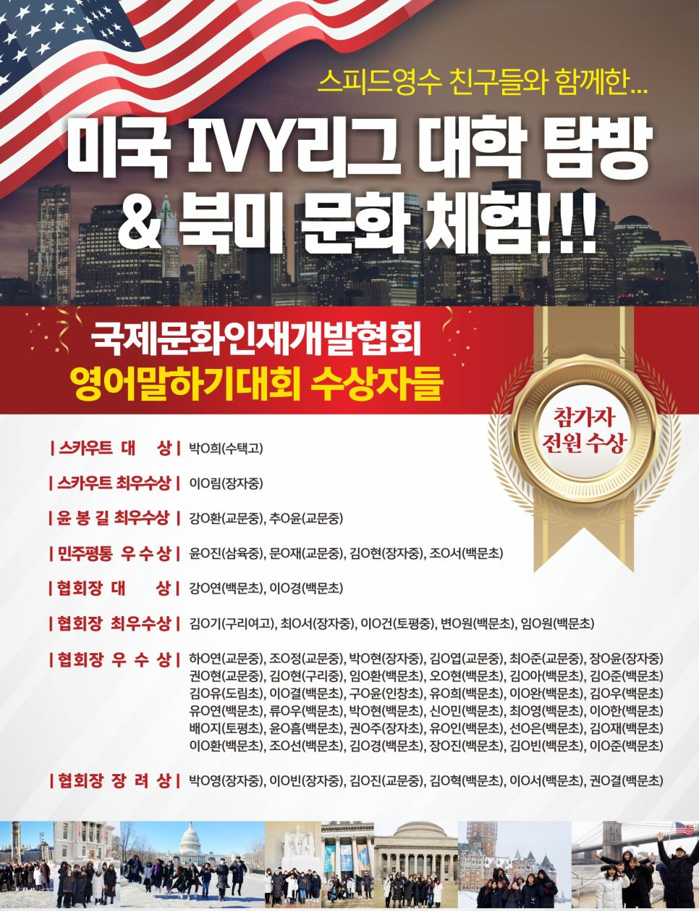
참가자 전원 수상2018년 1월 12일부터 24일까지 13일간, 2017년 국제문화인재개발협회 주최 영어말하기 대회 시상 학생들과 함께 미국 IVY 대학탐방 및 캐나다 체험캠프를 다녀왔습니다. 설렘 가득 안고 출발하던 날 — 하루하루 포스팅되는 우리 학생들의 멋진 모습, 기대해 주세요~
캠프의 동선은 캐나다 오타와·몬트리올·퀘벡에서 시작해 보스턴 → 뉴욕 → 필라델피아 → 워싱턴 D.C → 나이아가라 → 토론토로 이어지는 북미 동부 한 바퀴. 맥길·컬럼비아·예일·하버드·브라운·다트머스·유펜·프린스턴·줄리어드·MIT·토론토, 열한 개 명문대를 두 발로 걸었습니다.
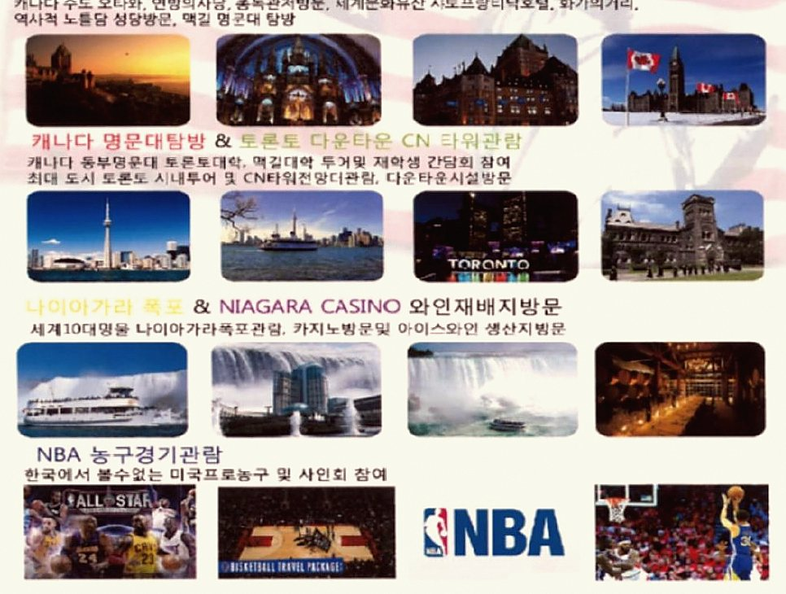
Itinerary첫 탐방은 캐나다의 수도 오타와, 팔러먼트 힐의 캐나다 국회의사당. 오타와 강을 굽어보는 석회암 절벽 위에 청동 지붕을 얹은 고딕 양식 건물로, 센터 블록 중앙에는 전몰자를 추모하는 높이 92m의 평화의 탑이 서 있습니다. 1866년 완공된 원래 건물은 1916년 화재로 소실되었고, 지금 건물은 1922년에 완공되었습니다.
맥길 대학교 — 캐나다에서 가장 오래된 대학 중 하나로, 공립대학 부문 북미 1위·캐나다 1위를 기록한 학교입니다. 영어와 프랑스어를 함께 쓰는 몬트리올에서 영어로만 수업을 진행하며, 11개 학부에 300여 개 프로그램, 슐리히 음악학부는 한 해 700회 넘는 공연을 올립니다.
탐방 전날 많은 눈이 왔다네요. 캠퍼스마다 제설차량이 바쁘게 눈을 치우고 있었어요. 캐나다 1위 대학을 걸으며 친구들은 어떤 학부가 유명한지 묻고 또 물었습니다. 웅장하고도 멋진 맥길에서 좋은 시간을 보내고, 다음 여정인 퀘벡의 아이스호텔로 출발합니다. 큰 세계를 보고, 큰 학문의 전당을 보고 느낀 우리 친구들의 마음을 계속 담아내고 싶군요.
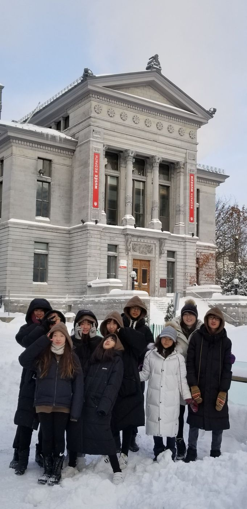
McGill University · Montréal설렘 잔뜩 안고 캐나다로 출발하던 날, 우리 일행은 드라마 <도깨비> 속 그 호텔과 편지가 끼워져 있던 그 우체통, 캐나다로 통하는 빨간 문을 볼 수 있다는 기대를 품었답니다. 듣기만 해도 설레는 그곳, 퀘벡.
아이스호텔에서 메이플 태피를 만들다 — 북미 유일의 얼음 호텔. 매년 11월에 문을 열어 얼음이 녹을 때까지 운영하고, 1만 2천 톤의 눈과 400톤의 얼음으로 짓습니다. 천장과 벽, 기둥, 샹들리에, 테이블, 침대까지 모든 것이 투명한 얼음. 사슴 털과 두툼한 침낭이 준비된 32개의 객실, 얼음 잔으로 마시는 아이스 바, 결혼식을 올리는 예배당까지 — 물론 전부 얼음입니다.
샤토 프롱트낙 호텔과 화가의 거리 — 퀘벡 시티의 심장 프티샹플랭은 북미에서 가장 오래된 번화가. 가파른 데다 밤새 술 마신 사람들이 오르내리다 다쳤다 하여 '목 부러지는 계단(Escalier Casse-Cou)'이라 불리는 계단 위에 우리가 서 있었습니다. 하하. 화가의 거리에서는 맘씨 좋은 분의 목공 스튜디오를 방문해 전문적이고 자상한 설명을 들었어요. 이렇게 또 우리 학생들이 하나의 세계를 넓힐 수 있어 감사합니다~ 이제 보스턴으로 고고!
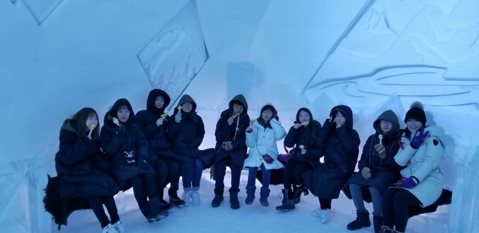
Hôtel de Glace · Québec맥도날드 맥머핀 아침으로 시작한 우리 팀은 하버드로 가는 길 내내 차 안에서 오늘 탐방할 대학들의 소개 영상을 보고 있습니다. 실시간으로 부모님들께 영상을 보내드리고 있는지라, "하버드에 입학시키실 부모님 선착순 접수" 농담도 유쾌하기만 한 오늘입니다^^
하버드 — 미국에서 가장 오래된 고등교육기관. 47명의 노벨상 수상자, 32명의 국가수반을 배출했고 루스벨트·케네디·오바마·반기문이 이곳 출신입니다. 존 하버드 동상의 '3대 거짓말' — 동상의 주인은 존 하버드가 아니고, 그는 설립자가 아니며, 설립년도도 1638년이 아니라는 것.
MIT — 공과대학이라는 이름이지만 경영·인문까지 가르치는 종합대학. 2011년까지 노벨상 수상자 76명. 브라운 — 1764년 설립, 미국에서 일곱 번째로 오래된 학교. IBM 설립자 토마스 왓슨 주니어가 이곳 출신. 예일 — 미국에서 세 번째로 긴 역사, 노벨상 수상자 52명, 빌 클린턴·폴 크루그먼의 모교.
명문대학의 도시 보스턴에서의 일정을 마무리하며 뉴욕으로 이동합니다. 하버드부터 예일까지 세계적인 리더들의 발자취를 따라가며 우리 친구들도 많은 걸 담고 있겠죠?!
보스턴에서 뉴욕으로 이동한 첫째 날. 뉴욕의 볼거리를 하나하나 챙겨 다니느라 참 분주히도 이동했어요. 그 와중에도 질서를 지키고 되려 적극적으로 참여해 준 우리 캠프팀에게 무한한 애정과 사랑을 보냅니다. 짝짝짝☆
컬럼비아 대학 — 1754년 영국 왕 조지 2세의 인가로 설립된 킹스칼리지가 전신. 독립 후 컬럼비아칼리지로, 1896년 종합대학으로 개편되었습니다. 줄리어드 음악 스쿨 — 링컨 센터에 자리한 세계 최고의 공연예술학교. 1905년 음악예술연구원으로 출발해 음악·무용·드라마학과와 재즈연구소, 프리칼리지 과정을 운영합니다. 재학생 공연도 관람할 수 있다는 팁☆
월스트리트의 위풍당당 소녀상과 황소, 페리를 타고 본 자유의 여신상과 브루클린 다리, 그리고 40년 넘게 세계에서 가장 높은 건물이었던 아르데코의 걸작 엠파이어 스테이트 빌딩 전망대. 맨해튼에서 보고 즐긴 포인트가 너무 많다는 걸 시간이 지나고 나니 더 실감이 되더군요. 강행군에도 건강히 하루하루 참여하고, 일정이 끝나는 하루하루를 아쉬워해 준 나의 학생들 — 정말 대견하고 사랑합니다♡
뉴욕에서의 1분 1초, 알차게 돌아보고 배우고 느끼는 와중에도 저녁 일정의 NBA 농구 관람에 대한 설렘을 품고 다녔던 것 같아요~
쉑쉑 버거 — 뉴욕 여행에서 절대 빠질 수 없는 맛집. 버거와 탄산을 테이크아웃해서 맨해튼의 분주함과 화려함을 바라보며 먹었답니다. NBA 농구 관람 — 워낙 농구에 관심이 많은 성○환 학생이 이번 여행의 베스트 포인트로 꼽은 시간. 전 경기를 녹화하는 열정으로~♥
타임스퀘어 — 42가부터 47가까지 5개 블록으로 이어진 뉴욕의 아이콘. 신식 건물과 북적임 속, 몇몇 전광판에 '방탄'의 뮤직비디오가 뜨고 있습니다. 우리 여학생들의 행복 수치가 올라갑니다. "BTS 땡큐 하하하~" NBC 방송국, 록펠러 빌딩, 유명한 스트릿 푸드까지 — 다 담을 수 없는 아쉬움을 가지고 오늘 포스팅을 마무리합니다. 바이바이~
오늘은 뉴욕 5번가를 걸어봅니다. 우리 캠프 친구들이 원하는 브랜드 샵을 찾아다니는 이 여유는 사실 한국에서도 잘 느껴보지 못한 자유이군요~ 보온병을 한 손에 들고 모자를 눌러쓴 뉴요커들 사이에서 햇살 받으며 걷는 느낌은 학교 탐방과는 또 다른 느낌을 주었답니다. 어디를 가나 블랙 롱패딩의 우리 생기발랄 부대는 빛을 발하는군요^^
센트럴파크 — 남북 4.1km, 뉴욕의 상징이자 세계에서 손꼽히는 도시공원. 연간 4천만 명이 찾는 이곳에서 존 레넌을 기리는 스트로베리 필즈, 베데스다 분수, 그리고 미국 드라마 주인공들이 타던 말과 마차를 만났습니다. 트럼프타워 — 하루 평균 100만 달러의 경호비용이 든다는 맨해튼 5번가의 트럼프 타워. 검사대를 통과해 2층 스타벅스에서 차 한잔, 지하 기념품샵까지. 애플스토어 — 우리 여중생들의 아이폰 사랑은 상상을 뛰어넘는걸요? 아하하…
항공모함 Intrepid — 맨해튼 서쪽의 Intrepid Sea, Air & Space Museum. 퇴역한 항공모함과 잠수함, 콩코드 여객기가 있는 곳. 실제로 사용했던 배를 그대로 박물관으로 만들었다고 해요~
국제문화인재개발협회 영어말하기 대회 시상 학생들과 함께한 이번 북미 캠프의 핵심은 역시 'IVY리그 대학 탐방'입니다. 대학탐방을 위해 준비된 영상을 보며 여러 질문들을 준비해 보았고, 재학생 간담회를 통해 현장감 있는 시간을 보내면 그 흥분은 쉽게 잊혀지지가 않는답니다.
아이비리그(Ivy League)란 미국 북동부의 명문 사립대 8개 — 하버드, 예일, 프린스턴, 펜실베니아, 코넬, 컬럼비아, 브라운, 다트머스 — 를 통칭하는 말입니다. 우리 학생들은 코넬을 제외한 아이비리그 대학들과 MIT, 줄리어드 음악스쿨, 그리고 캐나다의 맥길대학·토론토대학까지 탐방하고 왔답니다. 정말 열심히 총총총…
프린스턴 대학 — 영화 <뷰티풀 마인드>의 배경, 존 내시가 22살에 내시균형을 발표한 곳. 2001~2014년 전미 종합대학 순위 1~2위를 지킨 학교입니다. 물리학과 박사과정 재학생이 직접 인솔하여 캠퍼스를 돌며 생생한 비하인드 히스토리를 들려주어 더욱 뜻깊었던 시간이었어요.
펜실베니아(유펜) 대학 — 미국 최고의 비즈니스 스쿨 와튼스쿨로 유명하고, 워렌 버핏·일론 머스크·노암 촘스키가 이 학교 출신입니다. 개인적으로 가장 기억에 남는 학교입니다. 그날의 하늘빛, 그날의 쾌청함에 둘러본 캠퍼스는 동화 같았거든요. 모든 아이비리그 대학은 ID를 제시해야만 도서관 입장이 가능한데, 유펜 도서관에는 운 좋게 들어가 학구열 태우며 공부하는 학생들 옆 미팅룸에 앉아 현장감을 느낄 수 있었답니다. 이로써 미국 명문대 탐방을 마치고, 워싱턴 D.C로 이동하며 새로운 설렘을 가져봅니다!
워싱턴 D.C에서 보낸 따뜻한 겨울날을 어떻게 자랑할 수 있을지 한참 고민했습니다. 한파와 폭설의 뉴스를 접하고 떠난 우리의 북미캠프를 이렇게 맑은 하늘이 맞이해 줄지 누가 알았겠어요~ 우리 학생들은 영화에서 보던 역사적인 건물 앞 — 백악관, 국회의사당, 링컨기념관 — 에서 따스한 기온 덕분에 블랙 롱패딩을 벗어던지고 폴짝폴짝 뛰고 있었답니다.
링컨기념관 — 제16대 대통령 링컨을 기리는 그리스 신전 양식의 기념관. 36개 기둥에는 링컨 재임 당시 36개 주의 이름이, 안에는 19피트 높이의 링컨 석상과 게티스버그 연설문이 새겨져 있습니다. 이날따라 방송국 차와 기자, 악단, 피켓 든 사람들이 유난히 많더니 — 점심을 먹던 맥도날드 TV의 Breaking News로 알게 되었어요. 방금 우리가 있던 바로 그 자리에서 트럼프 정부 셧다운이 시작됐다는 것을. 우리 학생들이 운 좋게도(?) 정치의 현장감을 선물로 받았군요.
한국전쟁기념관 — 링컨기념관 바로 옆, 한국전쟁에서 희생된 미군을 기리는 곳. 생동감 있는 동상들 사이에서 학생들과 함께 가볍게 묵념했습니다. 워싱턴 기념탑 — 내셔널 몰 끝에 선 새하얀 오벨리스크, 미국을 세운 첫 대통령에게 바치는 탑. 자연사박물관 — 5,500만 점의 소장품, 티라노사우루스와 매머드 복원 모형. 국회의사당 — 1793년 조지 워싱턴이 주춧돌을 놓은, 워싱턴 시내 모든 건물 높이의 기준이 되는 건물. 백악관 — 1814년 영국군이 불을 질러 검게 탄 벽에 흰 페인트를 칠한 데서 이름이 시작된 '대통령의 집'.
반트럼프 시위 옆에서, 트럼프 기념품샵에서, 짧은 트레이닝복으로 조깅하는 그들의 생활문화에 젖어 가슴이 뛰기도 수차례. 즐겁고 중요한 경험을 꼭꼭 눌러 담으며 다음 국경 통과를 준비합니다~
미국 국경을 지나 바로 나이아가라 폭포로 향했습니다. 물보라를 맞는 오늘은 운치 있게 날씨도 살짝 흐린 듯했어요. 자연의 웅장함을 한참을 바라봅니다~
나이아가라 폭포는 미국 뉴욕주와 캐나다 온타리오주의 국경을 이루는 나이아가라 강의 대폭포입니다. 염소 섬을 기준으로 캐나다령 말발굽 폭포(Horseshoe Falls)와 미국령 미국 폭포(American Falls), 작은 브라이달 베일 폭포로 나뉘며, 전망은 캐나다 쪽이 더 좋은 것으로 알려져 있습니다. 말발굽 폭포는 높이 53m, 절벽면 길이 790m — 북미의 폭포 중 떨어지는 물의 힘이 가장 셉니다. 폭포 주변은 늘 안개가 끼어 있고, 이 물의 50~70%는 폭포에 이르기 전 수력발전에 쓰입니다.
나이아가라 게임장(아케이드) — 폭포에서 도보 10분 거리에 한국에서는 체험하지 못하는 게임장이 있답니다. 이곳에서 발길을 멈추고 1시간 자유시간을 가졌어요. 캠프의 막바지로 향하며 우리 친구들은 시간 보내는 것이 아쉽기만 한가 봐요~ 내일은 토론토대학 탐방의 날, 그리고 우리 학생들만의 파티도 준비되어 있답니다.
IVY 대학탐방 및 캐나다 문화체험의 마지막 스토리입니다. 맥길 대학을 시작으로 컬럼비아, 예일, 하버드, 다트머스, 유펜, 프린스턴, 줄리어드 음대, MIT, 그리고 오늘의 토론토 대학까지 — 정말 부지런히 다닌 것 같습니다. 그 사이 많은 안목이 생긴 덕인지, 토론토대 한국 학생회의 협조로 이루어진 설명회가 빛을 발한 건지… 우리 학생들의 날카로운 질문이 이어집니다. 우와~ 동물심리학을 전공하겠다던 채○연이는 이제 토론토 대학 입학을 확정하겠답니다. 처음 떠날 때 '더 큰 세상을 보여주고 더 큰 마음을 가지고 돌아가겠다'던 포부가 결실을 보게 된 걸까요?
사실 저는 우리 친구들의 더 적극적인 자세를 원할 때도 있었어요. 그런데 현지 원장님께서, 시간이 지날수록 아이들이 지금 이 시간을 더욱 그리워하고 더욱 강해지는 것을 느낄 거라고 알려주셨습니다. 역시나 저는 엄마 맘으로 옆에서 좀 더 보고, 좀 더 느끼고, 표현해 달라고 조르고 있었던 모양입니다. 하하.
토론토 대학 — 1827년 영국 국왕 특허장으로 설립된 킹스칼리지가 전신. 세인트조지·미시사가·스카버러 3개 캠퍼스와 트리니티·빅토리아 등 12개 칼리지로 이루어져 있고, 인슐린을 발견한 노벨생리의학상 프레더릭 밴팅, 노벨평화상 레스터 피어슨, 수학자 존 필즈를 배출했습니다.
A Farewell Party — 캠프 마지막 날, 시간을 쪼개고 쪼개서 다닙니다. 처음 만날 때부터 마지막 날은 바베큐 파티를 할지 랍스터 파티를 할지 고민했더랍니다. 토론토 중심가 '설빙 카페'에서 우리의 마지막 디저트, 우버와 스트릿카를 타고 CN타워로 향했지만 안개가 자욱해 전망대엔 오르지 못했어요. 대신 얻은 시간으로 토론토 곳곳을 채워봅니다. 무엇보다 의미 있었던 것은, 말하기대회 수상의 자부심을 바탕으로 협회의 지원을 받아 온 캠프인 만큼 보고 듣고 느끼려는 의지가 누구보다 높았다는 점. 함께 시간을 보낸 우리 학생들 간의 끈끈함은 지금 이 순간에도 계속되고 있답니다. 자, 스피드영수학원 선생님들과 학생들은 다시 올해의 새로운 도전을 준비하겠습니다!
지구환경 지키기 봉사활동 — 학원에서 직접 4시간 봉사 인증
'지구시민학교 EM 친환경 체험교실'은 천연 활성액 및 비누 기부와 환경캠페인 봉사활동을 통해 봉사활동 시간을 인정받는 프로그램입니다. 다른 곳에 가지 않아도 스피드TC학원에서 참여하고, 학원이 직접 4시간 봉사 인증을 해 드렸습니다. 1년 4회 이상 교육(16시간 이상) 진행.
총 4시간 교육으로 진행했습니다. 지구시민 강의와 EM 강의를 듣고, 전기레인지와 계량컵을 놓고 직접 EM 활성액과 EM 비누를 만든 뒤, 구리시 주변을 정리하는 환경캠페인으로 마무리했습니다.
친구들이 만든 비누는 구리시 내 불우한 이웃에게 전달되며, 학생들이 납부한 참가비 1만원은 지구시민운동연합에서 불우한 이웃을 위해 쓰입니다. 원장선생님이 토스트도 사주시고, 비누도 만들어 보고, 구리시 주변 정리도 하고 — 정말 좋은 기회였다고 생각합니다! 감사합니다!
"어서와, 스피드 파티에~" — 중간고사 끝, 피자와 사탕, 게임과 웃음이 있는 날
이렇게 행복한 해피 할로윈을 초등친구들과 보냈답니다. 오늘 파티 기운을 받아 중고등 선배들은 지금 사탕과 젤리 그리고 피자간식을 옆에 쌓아놓고 공부하고 있군요. 하하) 이렇게 스피드영수학원의 가을은 깊어가네요~~
거리의 울긋불긋 단풍을 즐길 사이도 없이 중간고사를 끝내고 나니 운 좋게도 이렇게 오렌지빛 파티를 우리 소중한 학생들과 함께 보낼 수 있었습니다. 사랑하는 우리 학생들과 즐거운 시간이 감사합니다. 해피 할로윈~~!!!
스피드의 파티는 그냥 노는 날이 아닙니다. 며칠 전부터 선생님들이 현수막과 응원 메시지를 붙이고, 과자와 사탕·젤리를 쌓아 두고, 피자와 음료를 넉넉히 준비합니다. 당일에는 사탕 뽑기와 미션 게임으로 줄을 서고, 친구들끼리 사진을 찍고, 영어도서관에서 선생님과 둘러앉아 먹고 떠듭니다.
파티만 특별한 날이 아닙니다. 생일인 친구가 있으면 그날은 초코파이 케이크를 만들어 다 함께 축하해 줍니다 — 그래서 스피드에는 거의 매일 케이크가 만들어집니다.
초등 친구들이 파티를 즐기는 동안 중·고등 선배들은 옆에서 사탕과 피자를 쌓아 놓고 공부합니다 — 시험을 끝낸 날의 보상이자, 학원이 "우리 집 같은 곳"이 되는 시간입니다. 할로윈뿐 아니라 응원데이, 종강 파티, 간식 파티까지 — 스피드의 파티는 아이들이 학원을 계속 다니고 싶게 만드는 끈끈한 유대감의 비결입니다.
영어로 읽고, 영어로 만들고, 영어로 먹는 시간 — 스피드만의 영어요리 특화 프로그램
매달 한 번, 교실이 주방이 됩니다. 영어 레시피를 읽고(Reading), 재료 이름과 조리 동사를 말하며(Speaking), 순서대로 직접 만들어(Doing) 먹는 스피드만의 영어요리 특화 프로그램입니다. 앞치마를 두른 초등 친구들이 당근을 볶고, 달걀을 부치고, 컵에 밥과 재료를 층층이 쌓아 자기만의 Colorful Rice Cake를 완성합니다.
책에서 배운 영어가 손끝에서 살아나는 시간 — 아이들은 "Stir fry", "Sprinkle", "Enjoy yours"를 외우는 게 아니라 몸으로 기억합니다. 완성한 요리는 집으로 가져가 부모님께 선물합니다.
다른 원장님들에게 노하우를 나누고, 서울대 합격의 눈물을 함께 흘리고, 파티와 장학금과 송별회로 채운 계절들. 그리고 사교육을 학문으로 연구하는 사람들.
스피드영수학원 탐방교육 — 20여 명의 원장님이 강의실을 꽉 채운 날
10월 31일 플립러닝지도사 과정이 열린 이후 보다 구체적이고 실제적인 교육을 갈망하는 원장님을 대상으로 지난 토요일인 11월 7일 플립러닝 성공학원 탐방교육이 구리 스피드 영수학원에서 진행되었습니다. 궂은 날씨에도 불구하고 20여 명이 넘는 원장님들이 강의실을 꽉 채웠는데요.
탐방교육의 시작은 스피드 플립러닝 시스템 운영기법 소개로 포문을 열었습니다. 무엇보다 부지런히 움직여야 하고 겸손히 여러 의견을 받아들여 연구하고 나아가 실천하는 자세가 그 시작입니다. 인접 학원과 차별화된 우리학원만의 컨셉은 무엇이고 이를 어떻게 시스템화하여 체계적으로 구축하느냐가 관건인 것 같아요. 이것이 바로 학원 성패를 좌지우지 하는 중요한 점이 아닐까 생각되는데요. 자리에 모인 원장님들도 우리 학원만의 차별화된 컨셉이 무엇인지 다시 한 번 생각해보고 그리고 고민하고 연구하게 만드는 동기가 충분히 부여되지 않았나 생각됩니다.
스피드 커리큘럼, 보카프로그램, 화상영어 수업 모델, 학년별 시간표를 보여주시면서 자세한 설명에 감탄했답니다. 아울러 이에 대해 질문하는 원장님들에게 커리큘럼 구성방법, 보카 프로그램은 어떻게 활용하는지, 화상영어 수업을 도입 방법 등에 대해 하나도 버릴 것이 없는 알찬 정보였네요.
여기에서 원장님의 역할은 전체적인 커리큘럼 구상 후 클래스 별로 월간 플랜을 작성 또는 선생님들에게 작성하게 하고, 같이 논의 하에 내용을 확정합니다. 모든 반이 다른 플랜을 가지고 공부하며 다른 과제와 교재로 수준별 학습을 최적화했습니다. 아울러 월간 플랜에 맞춰 숙제를 선정하고 이를 전체적으로 학원 시스템으로 녹이면 최초 한 번 강사교육만으로도 추후에는 물 흐르듯이 흘러가겠죠. — 연간 교육커리큘럼(Year+Month+Week+Day)
중등부는 어휘, 과제 검사를 시작으로 내신대비이다 보니 주로 문법수업강의(온오프라인 모두 활용)를 시작으로 2교시 온라인 학습(문법, 독해)과 문제해결 및 그룹별 발표 수업 준비를 하네요. 3교시에는 2교시에 준비한 내용을 바탕으로 나와서 설명하기, 그룹별로 발표하기 그리고 마지막으로 팀별로 과제를 해결하는 형태로 연결이 되는데요. 초등부와는 확실히 다른 양상을 보입니다. 토론을 하고 발표를 한다는 점은 같지만 시험을 대비하는 입장에서 본다면 좀 더 그물망의 코를 촘촘히 해서 물고기가 빠져나갈 구멍을 최소화한 것 같다는 느낌이 들었습니다. 지난번에 내신대비를 플립으로 질문을 받아서 해결한다는 원장님의 말씀이 이제 어느 정도 이해가 되는 순간입니다.
SM에서 제작한 플립러닝 적용 10단계 시스템! 스피드영수학원은 정말 토시 하나 안 빠뜨리고 이것을 그대로 적용을 했다고 하네요. 그래서 플립러닝을 성공적으로 정착시킬 수 있었다는 말을 하고요. 사실 플립러닝에 대한 좋은 자료는 처음에 SM잉글리쉬를 통해 다 나와있다며 카페나 밴드를 통해 자료를 연구할 것을 부탁하십니다.
뭐든 한 번에 180도 거꾸로 뒤집으면 그에 따른 부작용이 생기기 마련입니다. 그래서 천천히 단계를 밟아 나가야 중도 포기, 좌절, 실망하는 경우가 줄어들겠죠. 이를 무시하고 한 번에 대박을 꿈꾸며 시도를 하셨다가 낭패를 보신 원장님도 있더라고요. 한 번 실패를 경험하면 다시 시도하는 데에 더 많은 노력과 힘이 든다는 것은 누구나 공감하실 것입니다. 그래서 안원장님처럼 단계를 밟아 차근차근 진행하는 것이 결국엔 빨리 가는 것이라는 걸 다시 한 번 되새겨 봅니다. 더불어 지금도 연구해야 하는 것이 많고 함께 가야 더 멀리 간다는 생각으로 정보를 오픈하고 뜻이 맞는 원장님들의 문의나 모임을 항상 환영한다는 말에 함께 하신 탐방 프로그램 동기원장님들의 소속감은 더욱 깊어진 것 같아요.
2번의 일정 번거로움에 열띤 '제3차 플립러닝 지도사 과정'은 기다린 만큼의 설렘이 함께했습니다. 페르소나에서 제 가이드 안내 설명대로 참석 원장님들 모두가 가장 알기 쉽고 잘 정리된 스피드영수학원의 노하우 자료가 이날 발표되었습니다. 1, 2차 지도사 과정에서 총론적 관심에 있던 여러 원장님들과 함께한 SM플립러닝 강의는 학원가에 새로운 트렌드를 만들어가는 시간이었습니다.
9년을 함께한 아이가 가져온 합격 소식
합격 소식을 가지고 달려와 준 예O이, 선생님들과 껴안고 엄청 울었습니다. 9년을 함께 했는데 그 맘이 오죽했을까요, 후배들은 환호와 축하의 박수를 쳐주었습니다. 인생의 전반전 이렇게 감사한 결과를 가지고 출발하는 모습이 대견합니다. 우리 학원의 모든 학생들도 이렇게 좋은 결과를 가지고 떠날 수 있으면 좋겠습니다.
승리하는 것은 하루짜리 경기가 아니다.
그것은 매일 반복되는 작은 습관들의 연속이다.
— 제임스 클리어
이 아이는 초등 3학년부터 매주 한 번 퍼플카우 미래동기부여 프로그램을 들으며 비전과 중심가치, 사명서를 썼던 아이입니다. 초등 시절 작은 습관이 고3이 되어서도 유지될 수 있었던 것은 '꾸준함과 성실함' 덕분인 것 같습니다. 오랫동안 학원을 다니면 종종 슬럼프가 찾아오기 마련인데~ 그 때마다 용기와 격려로 잘 이겨내며 꾸준함과 성실함을 보여준 그 작은 아이와 앞으로 선배의 그 길을 걷게 될 후배들을 함께 응원하겠습니다.
스피드영수학원 수강료의 10%는 학생의 학업 성취도를 위해 사용되는 중입니다
2월 말이 되면서 중학교와 고등학교에 진학하는 친구들은 두근거리는 마음으로 반배정을 기다리고 있죠. 새로 받은 교복을 입어보고 증명사진도 찍으러 가고 어떤 친구와 선생님을 만나게 될지 설레는 마음은 예나 지금이나 변함이 없는 것 같습니다. 스피드TC학원 강사진도 마찬가지로 설레고 있습니다. 더불어 좋은 교육환경, 좋은 프로그램, 좋은 강사진 등 우리 학생들을 위한 꼼꼼한 준비에 분주합니다. 학원장의 한결같은 가치관, 학습 트렌드를 리더하는 교육관, 우리 학생들의 개별맞춤 학습을 위한 노하우 등 학생과 학부모님께서 믿고 신뢰할 수 있는 많은 것들을 준비하고 있습니다. 신규반 문의가 많은 1월~3월 동안 #스친소 삼삼이벤트를 진행하고 있습니다. 스피드TC를 믿고 소개해주시는 분들께 작지만 쑥스러움을 안고 감사의 인사를 드리고 있습니다.
3월 마지막 주가 끝나가고 있어요~ 우리 스피드영수학원의 전통 중 하나! 신학기에 새 친구들 새 담임선생님 그리고 학교생활에 적응하느라 설레고 긴장했을 우리 초등친구들을 위한 응원 Day Party☆ 3월의 마지막 주 금요일을 친하고 싶은 친구들, 친해진 새 학기의 친구들을 초대하여 스피드영수학원 보금자리 안에서 맛있는 먹을거리, 멋진 볼거리, 재미있는 즐길거리로 좋은 시간을 보내세요♬
3월 한 달간 새로운 만남에 적응하느라 고단했을 우리 초등 친구들을 위한 파티♡ 스피드 선생님들은 우리 친구들과 함께할 재미있는 게임과 상품 그리고 영화와 간식을 준비했어요♥ 자~ 오늘이 즐거웠던 만큼 다가오는 4월도 화이팅입니다☆ 스피드영수학원 초등부 친구들 화.이.팅!!
11월 11일, 스피드의 빼빼로 데이는 조금 특별합니다. 당첨된 학생들에게 주는 상품권이 학부모님이 운영하시는 가게의 것이거든요 — 치킨집, 커피숍, 수제돈가스집… 아이들은 친구 부모님 가게에서 맛있는 걸 먹고, 학부모님 가게에는 손님이 늘고, 학원은 그렇게 동네와 함께 삽니다.
스피드에는 오래된 원칙이 하나 있습니다. 수강료의 10%는 재원생들에게 돌려준다는 것. 파티와 간식, 생일 케이크, 이벤트 상품과 상품권이 모두 여기서 나옵니다. 아이들이 학원을 '공부만 하러 오는 곳'이 아니라 '내 자리가 있는 곳'으로 느끼게 하는 데 쓰는 돈입니다.
잠깐! 스피드영수학원에서는 매달 신입생들을 위주로 EBS TOSEL 응시를 실시하고 있어요. 학원 레벨테스트 외 전국으로 공신력 있는 공인인증시험을 준비하며 학생들은 학습영어의 기준을 알게 되고 작은 성공의 기회를 얻게 되는 계기로 삼고 있습니다. 물론… 공인인증시험을 지속적으로 준비하며 체크하는 결과 위주의 영어학습은 지양하고 있습니다. 도전의 즐거움, 성취의 경험 그리고 작은 성공들을 쌓아가는 하나의 과정으로 생각하시면 좋겠습니다.
제 61회 EBS TOSEL 인증시험 — 스피드영수학원에서는 매년 공식적인 인증시험을 통해 영어실력을 다지고 있답니다. 영어말하기대회나 혹은 영어공인인증시험을 준비하며 평상시 영어수업과 다른 패러다임 안에서 학습해보는 시간은 우리 아이들에게 좋은 경험이 됩니다. 우리 학원의 대부분의 친구들은 이미 해마다 EBS TOSEL 시험에 응시하여 좋은 결과를 안고 있기에 이번에는 여름방학 특강으로 미응시 친구들 및 다음 단계에 도전할 친구들과 소수정예로 준비해보았답니다~
2017.02.18. TOSEL(토셀) 시험 후기♥ — 겨울 방학 내내 준비한 EBS TOSEL 인증시험을 잘 마무리한 우리 스피드 친구와 함께하는 결전의 날이었습니다. 모두들 긴장한 듯 했지만 겨울 방학 내내 준비한 탓인지 짧은 시간 안에 자신감이 넘치는 얼굴로 변했답니다! 12시 학원 도착한 친구들과 최종점검 후 따뜻한 토스트를 먹었습니다~ 동화중학교 시험장으로 이동은 중고등&초등 학원차량으로 함께 이동하여 편안히 도착할 수 있었습니다! 각 고사장으로 입실하여 시험을 기다리는 우리 친구들! 우리 스피드 친구들의 모습은 너무너무너무 대견하고 이쁘기만 했답니다~~ 반드시 좋은 성적이 나올 거라 믿으며! 앞으로도 스피드영수학원에 많은 관심 부탁드리겠습니다!!
자유학기제를 보내고 있는 우리 중등 1학년 친구들~♥ 학교생활과 더불어 학원 생활에 대한 적응도 훌륭히 하고 4월을 맞이하였습니다. 중간고사 및 시험이 없는 학년임에도 불구하고 학습에 대한 의욕과 긴장을 갖고 있는 우리 꽃 같은 중1 친구들이 고맙고 대견하답니다!! 그래서 친구들과 4월을 시작하며 좋은 시간을 가져보았습니다. 4월은 본격적인 학교생활 및 평가가 시작됩니다. 4월 9일을 시작으로 전국 영어 듣기 평가와 각 과목의 수행평가 및 과목별 조별 활동들이 시작됩니다. 영어 수학에 대한 학습코치는 스피드 영수학원을 믿으시면 됩니다!! 그 외에도 우리 학생들의 즐거운 학습을 위한 동기부여 및 진로진학에 대한 길을 항상 열어두도록 하겠습니다.
안녕하세요, 연세대학교 교육대학원 동문 협력기관 스피드TC학원입니다. 늘 저희 학원을 믿고 응원해주신 학부모님들께 감사 인사드립니다. 2007년에 개원하여 올해로 13년째를 맞고 있는 스피드영수학원이 장자못 부근으로 학원을 이전하였습니다. 12월 23일 월요일에 새 학원에서 오픈 설명회를 진행했으며, 2020년 1월 2일 목요일부터 새 학원에서 수업이 진행되었습니다. 학원이전소식에 보내주신 많은 응원 덕에 23일 오픈세미나는 잘 마무리되었습니다. 오픈설명회 때 드린 검사권은 학생들과 시간 예약 후 진행할 예정입니다. — "진로를 알면 진학이 보인다" 설명회
이제 2차 설명회 고1 학생의 입시전략은? 가 진행할 예정입니다. 정확한 입시전략을 세우기 위해 우리 자녀와 학부모님께서 함께 참여하는 설명회를 준비했습니다. 자녀와 함께하는 입시전략 세미나 · 2020.02.22(토) · 스피드TC학원(토평동 올리브영 건물 3층) · 구리·남양주 예비 고1 학생과 학부모님 / 대입전략에 관심 있는 학부모 · 강연자 신준호 입시 전문가
1월 한 달 동안 고생한 우리 아이들을 위해, 작은 응원의 메시지를 보내요. 2월에도 열심히 공부해줘~ DREAM UP — 1월 한 달 동안 고생했고~ 2월에도 화이팅~!!
스피드TC학원에서는 우수한 성적을 거둔 학생에게 장학금을 지급하는 장학금 제도를 운영 중입니다~! 한 번도 흐트러진 모습 보이지 않고, 꿈을 위해 노력하는 아이를 보며, 더 큰 꿈을 이루기 위해 학원에서는 장학제도를 만들었습니다. 중등부는 수강 과목별 상품권 5만원, 고등부는 수강 과목별 상품권 10만원 — 학생들의 동기부여를 위해 장학금을 지급합니다. 우수학생은 [내신]과 [모의고사] 성적으로 구분하여 수상합니다.
스피드영수 친구 여러분♡ 이 날은 오랜 시간 함께한 친구가 전학을 가는 날이었어요^^ SS class & SPclass 친구들과 보낸 farewell party~ 학원마다 문화라는 것이 있지요. 스피드영수학원의 문화란, 신입생은 많지 않지만 퇴원생이 없는 학원 — 6년 이상 학원을 다니고 있는 많은 선배들을 따라 스피드는 어느새 Family가 되고 있어요. 근거리에 다산신도시가 들어서고 몇몇의 친구들이 이제 전학을 가지요ㅠㅠ 보내는 친구들도 가는 친구들도 모두 아쉬움 가득한 요즘입니다^^ 미리 생일축하도 하면서 송별회를 했습니다. 친구들이 직접 음료와 팝콘을 날라 성을 쌓고 노래를 부르고 안부를 묻고. 다O이는 제발 다산에 스피드 2관을 부탁한다는 인사를 남겼어요… 오랜 시간 함께 한 5학년 다O이.. 앞으로 멋진 당당한 그리고 훌륭한 친구로 성장할 것을 믿습니다!! 그리고 사랑합니다~ 좋은 인연으로 다시 만날 수 있을 거에요~ 그리고 좋은 소식도 기다리고 있겠습니다~!!
올해도 작년에 이어 영어말하기대회에 참여하였습니다. 작년 57명 전원 시상의 영광과 북미캠프에 참여한 경험을 바탕으로 올해도 지O, 시O, 민O, 다O, 하O, 연O, 경O이와 함께 알찬 대회준비로 즐거운 시간을 보냈답니다! 무대 위의 성공의 경험을 가져볼 수 있었다는 것이 너무나 기쁩니다. 1회 대회의 성공적인 참여가 2회 대회의 여유 있는 도전으로 이어졌고 그렇게 영어말하기에 더욱 도전하는 친구들의 불씨가 스피드영수학원에 퍼지길 바랍니다~ 이번 대회 시상한 친구 여러분 모두 자랑스럽습니다~~~ 축하합니다
퍼플카우 동기부여 시간~! 현재의 나 – 미래의 나 – 비전에 관하여 – 시간을 거치며 그렇게 단단해지고 있는 스피드영수 학원의 막내들을 위한~ 비전 보드 쓰기 전 연습해보는 시간을 가져봤어요. 50개의 리스트를 앉은 자리에서 거침없이 써가는 친구들의 모습에 놀라기도 무색하게 한 장 더!! 를 외치며 100개의 리스트를 채워 내는 당당한 막내들의 모습에 감사한 함박 웃음이 끊이질 않습니다. 어느 한 명의 버킷리스트도 안 귀한 것이 없겠지만, '봉사와 기부'로 가득 채운 우리 한 꼬마의 리스트는 두고 두고 마음에 담고 싶습니다!
버킷리스트는 죽기 전에 꼭 해보고 싶은 일을 적은 목록입니다. 2007년 미국에서 제작된 잭 니콜슨, 모건 프리먼 주연의 영화 버킷리스트로부터 그 이름이 유래되었습니다. 죽기 전에 도전하고 싶은 일이 있나요? 주위 사람들의 시선 때문에 혹은 현실 여건 때문에 못했지만 언젠가 꼭 해보고 싶은 일이 있나요? 죽기 전에 꼭 가보고 싶은 여행지는? 죽기 전에 만나고 싶은 사람은? 유명인과 만날 기회가 된다면 누구를 만나고 싶나요? 무엇을 하고 어떤 이야기를 나누고 싶나요? 당신이 죽고 난 후 당신을 기억하는 사람들에게 어떻게 기억되길 원하나요?
중간고사 끝! 영어 말하기 대회 끝!! 수능준비로 바쁘게 달린 5월!!! 여러분을 항상 응원하는 스피드영수학원이 애정과 사랑의 시간을 마련해봤어요! 초등부는 과자도 먹고! 영어 퀴즈 시간과 영화 감상으로 즐거운 시간 보냈습니다. 저녁에는 중고등부가 삼겹살 Party를 했어요! 돼지 한 마리 협찬해주신 학부모님과 음료수 제공해주신 학부모님께도 감사드립니다. 원장선생님이 고기도 구워주시고, 선생님들과 즐거운 시간도 가졌습니다! 곧 기말고사를 준비할 우리 중고생들, 레벨 테스트 후 새로운 학원 커리큘럼에 적응할 초중생들 6월에도 힘내서 GO!
초등부 친구들과 가진 즐거운 파티입니다. 공부도 파티도 스피드 안에서 즐거운 시간을 가졌습니다.
숨이 헉… 막히는 요즘처럼 더운 여름날씨는 정말 오랜만이에요~ 땀을 비오듯 쏟아내며 학원 문을 열고 들어오는 우리 초등 막내들을 보면 당장 달려가서 땀 닦아주고, 물도 먹이고 열 좀 식히라고 항상 이야기를 하게 됩니다!! 이런 날씨에도 축구하다가 들어오는 친구들이 얼마나 많은지~ 짠~☆ 마침 초등학교 방학식 날인 오늘 우리 스피드영수학원에서는 ICE PARTY를 했어요~ 시원한 수박화채를 먹으며 수업을 했지요~ 아이스크림과 팝콘도 함께^^
안녕하십니까? 2007년 개원을 시작으로 10년이 지난 지금까지 아낌없이 보내주신 성원에 감사드립니다. 스피드 영수학원의 발전은 학부모님들의 관심과 격려가 그 바탕이 되고 있음을 잘 알고 있기에 최선을 다하고 노력하고 있습니다. 이번에 본원에 여러 가지 기쁜 소식이 있어 학부모님들께 알려드리려 합니다.
1층 코칭센터 개관 — 2층, 3층에 이어 본원 1층을 확장하여 진로, 진학, 대입(수시, 정시) 코칭센터를 개관하게 되었습니다. 이번 코칭센터 개관을 통해, 저희 학원만의 Know-How뿐만 아니라, 강남 대치동 및 서울 주요 학군의 학원 원장님들과 정보교환으로 만들어진 데이터베이스, 최신 입시 설명회 참가를 통해 학생과 학부모님들에게 필요한 정보를 제공할 수 있게 되었습니다.
전과목 전교 1등 — 2011년 중1 처음 입학한 학생이 벌써 고3이 되었습니다. 학교에서 과목별 1등은 다르기 마련인데, 본원 김O연 학생은 전과목 1등을 하였습니다. 평소의 공부습관과 노력으로 이루어 낸 결과라 생각이 들며 스피드영수학원의 김O연 학생을 칭찬합니다.
돈가스 이벤트 — 위와 같이 학원의 좋은 소식이 많아 원생 및 부모님을 대상으로 돈가스 이벤트를 개최하고자 합니다. 10명 추첨할 예정이며 자세한 이벤트 내용은 학원밴드에 공지하도록 하겠습니다. 많은 참여 부탁드립니다. 앞으로도 끊임없는 관심 부탁드리며 본원 1층에 개관한 코칭센터에도 많은 관심 부탁드립니다. — 강평원 원장 드림
매년 구리남양주 교육청이 주최하는, 우리 고장을 주제로 하는 영어말하기 대회
매년 구리남양주 교육청에서 우리 고장을 주제로 하는 영어말하기 대회를 주최합니다. 이에 "2015 백문초등학교 교내 영어말하기 공모전"에서 우수한 성적을 거두었기에 축합니다. 이번 대회에서는 학생들 스스로 참가 희망한 학생들을 먼저 선별하여(3개 팀) 우리 고장에 대한 정보를 수집, 수집된 자료를 활용한 대본 영작 연습, 영어말하기, 연기지도 등 스피드영수학원의 강사와 학생들의 즐거운 노력의 결과라 할 수 있습니다.
영어 말하기 대회 UCC부문 — 최우수상(서O화, 안O은)
영어 말하기 대회 UCC부문 — 최우수상(고O늘, 김O지, 최O서) · 우수상(신O주, 권O현, 신O윤) · 우수상(김O현, 윤O린, 장O윤) · 장려상(조O재, 박O형) · 장려상(김O현, 강O환, 윤O진) · 장려상(서O화, 안O은)
영어 말하기 대회 UCC부문 — 최우수상(강O환, 박O형, 윤O진) · 우수상(권O현, 김O지, 고O늘, 임O지) · 장려상(김O현, 이O연, 장O윤, 윤O린)
영어 말하기 대회 UCC부문 — 우수(2위) 5-4 김O우, 이O린, 5-2 이O건
사교육의 새로운 길을 묻다 — 사교육을 학문적으로 탐구하고 사회적 가치를 창출하기 위해 설립된 전문 연구 단체
한국 사교육 연구협의회는 사교육을 학문적으로 탐구하고, 사회적 가치를 창출하기 위해 설립된 전문 연구 단체입니다. 사교육은 단순한 경쟁의 수단이 아니라, 공교육을 보완하고 학습자 개개인의 가능성을 확장하는 중요한 축입니다.
설립 배경 — 한국 사회에서 사교육은 필수적이지만 동시에 논쟁적인 존재였습니다. 한편으로는 학습 격차 해소와 공교육 보완의 역할을 하며 다른 한편으로는 불평등 문제를 야기하기도 했습니다. 이러한 복합적 문제를 해결하기 위해 사교육을 전문 학문 영역으로 탐구하고 체계화하는 단체의 필요성이 제기되었고, 그 결과 한국 사교육 연구협의회가 탄생했습니다.
개요 — 정식 명칭: 사단법인 한국 사교육 연구협의회(KAPTS) · 설립 목적: 사교육을 체계적 연구 대상으로 정립하고 교육경영학 발전에 기여 · 주요 활동: 1) 학술지 발간 2) 학술대회 개최 3) 교육 세미나 운영 4) 정책 제안 및 사회적 기여
학술연구 — 학술지 『사교육연구』 발간 · 연구자·교육자 간 협력 연구 지원 · 사교육 관련 정책 분석 및 대안 제시
학술 교류 및 행사 — 학술대회, 워크숍, 세미나 개최 · 국내외 학자·교육기관과 협력 네트워크 구축
교육 및 회원 활동 — 신입 회원 대상 교육 프로그램 운영 · 연구위원, 학술위원 활동을 통한 전문 네트워크 형성
사회 기여 — 교육산업 및 사교육 종사자들에게 학문적 지침 제공 · 학생·학부모의 올바른 교육 선택을 위한 자료 제공 · 정부 및 기관의 정책 수립에 참고할 수 있는 연구 결과 확산
학술지 『사교육연구』 — 국내 최초의 사교육 전문 학술지. 발간 주기: 연 2회(4월, 10월). 주요 주제: 사교육 정책 연구, 교육경영 사례 분석, 글로벌 사교육 동향 연구 ※ 한국연구재단 등재 학술
학술대회 & 포럼 — 협의회는 정기 학술대회와 포럼을 개최하여 연구자, 교사, 학부모, 교육 산업 종사자가 함께 모여 사교육의 의미와 미래 방향을 논의합니다. 최근에는 온라인 교육, 인공지능 기반 학습, 디지털 교육 혁신과 같은 미래형 교육 주제를 중심으로 학술적 담론을 확장하고 있습니다.
사회적 기여 & 수상 — 사교육 인식 개선 · 정책 대안 제시 · 교육산업 발전 지원 · 학부모 및 학생 대상 연구자료 제공 · 주요 수상: 2025 대한민국 교육산업대상 수상
아래는 고문으로 활동해주시고 계신 ybm시사 저자이신 박준원 교수님과 메가스터디의 손주은 회장님과 영어과 원장님께서 함께 찍은 사진입니다~!
희망을 나누는 기관 — 장학 혜택으로 만난 아이들이 어른이 되어 세상으로 나가기까지
드림스타트(Dream Start)는 취약계층 아동이 건강하게 성장하고 공평한 출발 기회를 갖도록 돕는 보건복지부·지자체의 아동 통합서비스입니다. 12세 이하 저소득 가정 아동과 가족을 대상으로 학습·건강·정서·복지를 한꺼번에 살피며, 구리시 드림스타트는 지역 기관들과 손을 잡고 아이들에게 필요한 서비스를 연결해 줍니다.
스피드TC학원은 구리시 드림스타트의 '희망을 나누는 기관'으로 함께해 왔습니다. 드림스타트 아동에게 장학 혜택을 드리고, 다른 원생과 똑같은 수업·교재·관리 시스템 안에서 영어와 수학을 배우게 했습니다. "형편 때문에 학원 문턱을 넘지 못하는 아이가 없어야 한다" — 학원을 하며 놓지 않으려 했던 마음입니다.
그 아이들이 자라 대학에 가고, 사회로 나갔습니다. 드림스타트로 만난 아이 가운데 CJ 대기업에 취업한 사례도 있습니다. 매출로는 계산되지 않지만, 학원을 운영하며 얻은 가장 큰 보람 중 하나입니다. 교육은 한 아이의 인생을 바꾸고, 그 아이가 다시 누군가의 희망이 됩니다.
전국 원장님들에게 상담 노하우를 열고, 스피드를 한 가족의 이야기로 마무리합니다.
학원 노하우 탐방교육에 이어, 전국 원장님들을 위해 강좌 오픈!
훈장EDU에서 안성은 영어과 원장님의 온라인 강좌를 오픈했습니다! 학원 탐방 프로그램으로 운영·수업 노하우를 나누었던 스피드가, 이번에는 원생 관리와 학부모 상담의 표준을 전국의 원장님들에게 열었습니다.
플립러닝 수업과 실전 프로젝트, 동기부여 프로그램, 영어도서관, 영어 말하기 대회, 연세대 탐방과 북미 캠프, 문화·축하 이벤트, 장학 제도, 그리고 EBS TOSEL 운영까지… 모든 활동을 한 축으로 엮어 아이들의 성장 경로를 설계해 왔습니다.
처음에는 강의는 최소화하고, 토론·발표·문제 해결을 극대화했습니다. 그러나 교실 수업이 아이들만의 힘으로만 운영되기에는 현실적인 한계가 있었습니다. 이에 스피드TC학원은 이름 그대로 티칭(Teaching)과 코칭(Coaching)의 균형 시스템을 도입했습니다. 필요한 지식은 명확하게 전달하되, 학습의 주도권은 아이들이 스스로 사고하고 탐구하는 데 두어, 지식과 경험, 지도와 성장이 조화를 이루는 수업 구조를 완성했습니다.
연세대학교 대학 탐방, 북미 해외 캠프, 영어 말하기(UCC) 대회와 연속 수상, EBS TOSEL 응시와 성취, 그리고 북미 교과 기반 700여 종 스토리북을 갖춘 영어도서관은 듣기·말하기·읽기·쓰기가 선순환하는 무대를 만들어 주었습니다. 또한 English Cooking, ICE/응원 Day, 버킷리스트 활동, Farewell·Welcome 파티는 아이들이 심리적 안전감 속에서 도전할 동기를 얻는 장이 되었습니다.
내신·모의고사 성취에 따른 장학 제도로 노력의 보상을 명확히 하고, 누적 데이터와 개별 피드백을 통해 목표—실행—점검의 고도화 시스템을 운영했습니다. 그 결과 2024 서울대(경제학부) 합격을 비롯해 각종 대회 수상과 공인시험 성취가 이어지며, 신뢰는 데이터로 확인되고 있습니다.
스피드TC학원은 배움의 길을 결코 혼자 걷지 않았습니다. 학원 탐방 프로그램으로 운영·수업 노하우를 나누고, 훈장EDU 온라인 강좌로 학부모 상담 스킬과 원생 관리 표준을 개방했습니다. 더 나아가 고문이신 메가스터디 손주은 회장, YBM시사 박준원 교수, EBS 강사진, 학원장님·교수님들과 함께하는 한국 사교육 협의회 활동으로, 사교육의 학문적·경영적 성장을 뒷받침해 왔습니다.
스피드TC학원이 걸어온 길은 단순히 성적을 높이는 수업이 아니라,
아이들이 스스로 생각하고, 경험으로 시야를 넓히며, 성과로 자신감을 얻는 과정이었습니다. 맺음말 · 아이들의 내일을 함께 열며
플립러닝 수업, 영어도서관, 말하기 대회, 대학 탐방과 해외 캠프, 그리고 학부모님과 함께한 상담과 소통까지 — 모든 발걸음은 아이들이 세계 시민으로 성장하기 위한 밑거름이었습니다. 앞으로도 저희는 아이들의 작은 성취에도 함께 기뻐하며, 좌절의 순간에도 다시 일어설 수 있도록 든든한 동반자가 되겠습니다.
스피드TC학원은 아이 한 명, 한 명의 가능성을 믿습니다. 그 믿음이 곧 부모님의 희망이 되고, 우리 모두의 미래가 된다고 믿습니다.
그리고 이 길은 저희 가족에게도 특별한 여정이었습니다. 2004년생 아들은 7세에 스피드와 함께 시작해 고3까지 학원의 품에서 성장했고, 지금은 의생명공학과에 입학하여 꿈을 향해 달려가고 있습니다. 2007년생 딸 역시 초등 1학년 때부터 함께하며, 2025년의 고3을 마무리하고 있습니다. 아이들과 함께 웃고, 때로는 힘든 시간을 견디며 달려온 날들이 스피드TC를 단순한 학원이 아니라, 함께 성장하는 가족의 이름으로 만들어 주었습니다.
앞으로도 학부모님과 아이들이 가족의 한 부분으로 느낄 수 있도록, 늘 곁에서 따뜻하게 함께하겠습니다.